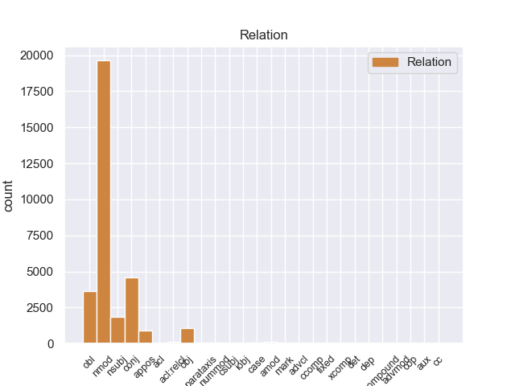
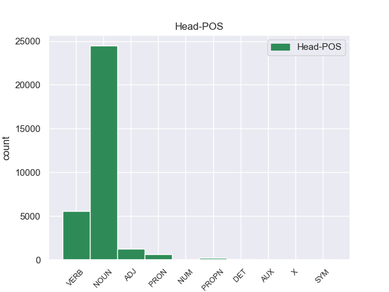
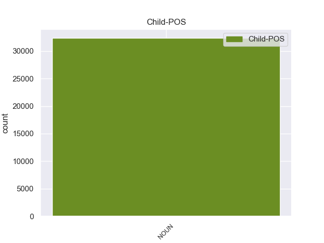

Distribution of features within this leaf



Agreement Rules sorted by frequency.
- When the dependent token is the nominal modifier(nmod) of the head token, and the head token is NOUN and the dependent token is NOUN.
1 El _ _ _ _ 0 _ _ _
2 estudio _ _ _ _ 0 _ _ _
3 , _ _ _ _ 0 _ _ _
4 publicado _ _ _ _ 0 _ _ _
5 en _ _ _ _ 0 _ _ _
6 la _ _ _ _ 0 _ _ _
7 revista _ _ _ _ 0 _ _ _
8 Environmental _ _ _ _ 0 _ _ _
9 Health _ _ _ _ 0 _ _ _
10 Perspectives _ _ _ _ 0 _ _ _
11 , _ _ _ _ 0 _ _ _
12 precisó _ _ _ _ 0 _ _ _
13 que _ _ _ _ 0 _ _ _
14 el _ _ _ _ 0 _ _ _
15 herbicida _ _ _ _ 0 _ _ _
16 mata _ _ _ _ 0 _ _ _
17 una _ _ _ _ 0 _ _ _
18 gran _ _ _ _ 0 _ _ _
19 proporción _ _ _ _ 0 _ _ _
20 de _ _ _ _ 0 _ _ _
21 esas _ _ _ _ 0 _ _ _
22 células _ _ _ _ 0 _ _ _
23 después _ _ _ _ 0 _ _ _
24 de _ _ _ _ 0 _ _ _
25 sólo _ _ _ _ 0 _ _ _
26 dieciocho _ _ _ _ 0 _ _ _
27 horas _ _ _ _ 0 _ _ _
28 de _ _ _ _ 0 _ _ _
29 exposición exposición NOUN _ Gender=Fem|Number=Sing 0 _ _ _
30 a _ _ _ _ 0 _ _ _
31 concentraciones concentración NOUN _ Gender=Fem|Number=Plur 29 nmod _ _
32 menores _ _ _ _ 0 _ _ _
33 que _ _ _ _ 0 _ _ _
34 las _ _ _ _ 0 _ _ _
35 utilizadas _ _ _ _ 0 _ _ _
36 en _ _ _ _ 0 _ _ _
37 el _ _ _ _ 0 _ _ _
38 uso _ _ _ _ 0 _ _ _
39 agrícola _ _ _ _ 0 _ _ _
40 . _ _ _ _ 0 _ _ _
1 El _ _ _ _ 0 _ _ _
2 estudio _ _ _ _ 0 _ _ _
3 es _ _ _ _ 0 _ _ _
4 muy _ _ _ _ 0 _ _ _
5 confortable _ _ _ _ 0 _ _ _
6 , _ _ _ _ 0 _ _ _
7 la _ _ _ _ 0 _ _ _
8 música música NOUN _ Gender=Fem|Number=Sing 0 _ _ _
9 , _ _ _ _ 0 _ _ _
10 el _ _ _ _ 0 _ _ _
11 sonido _ _ _ _ 0 _ _ _
12 de _ _ _ _ 0 _ _ _
13 el _ _ _ _ 0 _ _ _
14 agua _ _ _ _ 0 _ _ _
15 , _ _ _ _ 0 _ _ _
16 la _ _ _ _ 0 _ _ _
17 luz luz NOUN _ Gender=Fem|Number=Sing 8 conj _ _
18 tenue _ _ _ _ 0 _ _ _
19 ... _ _ _ _ 0 _ _ _
20 y _ _ _ _ 0 _ _ _
21 lo _ _ _ _ 0 _ _ _
22 mejor _ _ _ _ 0 _ _ _
23 sus _ _ _ _ 0 _ _ _
24 manos _ _ _ _ 0 _ _ _
25 ! _ _ _ _ 0 _ _ _
1 Las _ _ _ _ 0 _ _ _
2 principales _ _ _ _ 0 _ _ _
3 ciudades _ _ _ _ 0 _ _ _
4 ordenadas ordenado VERB _ Gender=Fem|Number=Plur|VerbForm=Part 0 _ _ _
5 por _ _ _ _ 0 _ _ _
6 población población NOUN _ Gender=Fem|Number=Sing 4 obl _ SpaceAfter=No
7 , _ _ _ _ 0 _ _ _
8 provincia _ _ _ _ 0 _ _ _
9 y _ _ _ _ 0 _ _ _
10 región _ _ _ _ 0 _ _ _
11 son _ _ _ _ 0 _ _ _
12 : _ _ _ _ 0 _ _ _
1 Como _ _ _ _ 0 _ _ _
2 investigador _ _ _ _ 0 _ _ _
3 especialmente _ _ _ _ 0 _ _ _
4 crítico _ _ _ _ 0 _ _ _
5 , _ _ _ _ 0 _ _ _
6 ha _ _ _ _ 0 _ _ _
7 desenmascarado desenmascarar VERB _ Gender=Masc|Number=Sing|Tense=Past|VerbForm=Part 0 _ _ _
8 innumerables _ _ _ _ 0 _ _ _
9 fraudes fraude NOUN _ Gender=Masc|Number=Plur 7 obj _ _
10 y _ _ _ _ 0 _ _ _
11 engaños _ _ _ _ 0 _ _ _
12 relacionados _ _ _ _ 0 _ _ _
13 con _ _ _ _ 0 _ _ _
14 las _ _ _ _ 0 _ _ _
15 creencias _ _ _ _ 0 _ _ _
16 . _ _ _ _ 0 _ _ _
1 Los _ _ _ _ 0 _ _ _
2 arcos _ _ _ _ 0 _ _ _
3 en _ _ _ _ 0 _ _ _
4 ojiva _ _ _ _ 0 _ _ _
5 recuerdan _ _ _ _ 0 _ _ _
6 la _ _ _ _ 0 _ _ _
7 tendencia _ _ _ _ 0 _ _ _
8 historicista _ _ _ _ 0 _ _ _
9 , _ _ _ _ 0 _ _ _
10 pero _ _ _ _ 0 _ _ _
11 los _ _ _ _ 0 _ _ _
12 cables _ _ _ _ 0 _ _ _
13 de _ _ _ _ 0 _ _ _
14 acero _ _ _ _ 0 _ _ _
15 así _ _ _ _ 0 _ _ _
16 como _ _ _ _ 0 _ _ _
17 el _ _ _ _ 0 _ _ _
18 resultado resultado NOUN _ Gender=Masc|Number=Sing 0 _ _ _
19 técnico _ _ _ _ 0 _ _ _
20 ( _ _ _ _ 0 _ _ _
21 480 _ _ _ _ 0 _ _ _
22 metros metro NOUN _ Gender=Masc|Number=Plur 18 appos _ _
23 de _ _ _ _ 0 _ _ _
24 alcance _ _ _ _ 0 _ _ _
25 , _ _ _ _ 0 _ _ _
26 una _ _ _ _ 0 _ _ _
27 de _ _ _ _ 0 _ _ _
28 las _ _ _ _ 0 _ _ _
29 construcciones _ _ _ _ 0 _ _ _
30 más _ _ _ _ 0 _ _ _
31 altas _ _ _ _ 0 _ _ _
32 de _ _ _ _ 0 _ _ _
33 la _ _ _ _ 0 _ _ _
34 ciudad _ _ _ _ 0 _ _ _
35 a _ _ _ _ 0 _ _ _
36 el _ _ _ _ 0 _ _ _
37 final _ _ _ _ 0 _ _ _
38 de _ _ _ _ 0 _ _ _
39 el _ _ _ _ 0 _ _ _
40 siglo _ _ _ _ 0 _ _ _
41 XIX _ _ _ _ 0 _ _ _
42 ) _ _ _ _ 0 _ _ _
43 hacen _ _ _ _ 0 _ _ _
44 de _ _ _ _ 0 _ _ _
45 él _ _ _ _ 0 _ _ _
46 un _ _ _ _ 0 _ _ _
47 edificio _ _ _ _ 0 _ _ _
48 moderno _ _ _ _ 0 _ _ _
49 . _ _ _ _ 0 _ _ _
1 Vio _ _ _ _ 0 _ _ _
2 interrumpidos interrumpido VERB _ Gender=Masc|Number=Plur|VerbForm=Part 0 _ _ _
3 sus _ _ _ _ 0 _ _ _
4 estudios estudio NOUN _ Gender=Masc|Number=Plur 2 nsubj _ _
5 en _ _ _ _ 0 _ _ _
6 1936 _ _ _ _ 0 _ _ _
7 a _ _ _ _ 0 _ _ _
8 el _ _ _ _ 0 _ _ _
9 iniciar _ _ _ _ 0 _ _ _
10 se _ _ _ _ 0 _ _ _
11 la _ _ _ _ 0 _ _ _
12 Guerra _ _ _ _ 0 _ _ _
13 Civil _ _ _ _ 0 _ _ _
14 Española _ _ _ _ 0 _ _ _
15 , _ _ _ _ 0 _ _ _
16 pasando _ _ _ _ 0 _ _ _
17 a _ _ _ _ 0 _ _ _
18 realizar _ _ _ _ 0 _ _ _
19 trabajos _ _ _ _ 0 _ _ _
20 de _ _ _ _ 0 _ _ _
21 oficinista _ _ _ _ 0 _ _ _
22 . _ _ _ _ 0 _ _ _
1 El _ _ _ _ 0 _ _ _
2 reclamo reclamo NOUN _ Gender=Masc|Number=Sing 5 nsubj _ _
3 turístico _ _ _ _ 0 _ _ _
4 queda _ _ _ _ 0 _ _ _
5 completado completado ADJ _ Gender=Masc|Number=Sing|VerbForm=Part 0 _ _ _
6 con _ _ _ _ 0 _ _ _
7 la _ _ _ _ 0 _ _ _
8 existencia _ _ _ _ 0 _ _ _
9 de _ _ _ _ 0 _ _ _
10 formaciones _ _ _ _ 0 _ _ _
11 coralinas _ _ _ _ 0 _ _ _
12 , _ _ _ _ 0 _ _ _
13 muy _ _ _ _ 0 _ _ _
14 apreciadas _ _ _ _ 0 _ _ _
15 por _ _ _ _ 0 _ _ _
16 los _ _ _ _ 0 _ _ _
17 submarinistas _ _ _ _ 0 _ _ _
18 , _ _ _ _ 0 _ _ _
19 y _ _ _ _ 0 _ _ _
20 las _ _ _ _ 0 _ _ _
21 expediciones _ _ _ _ 0 _ _ _
22 de _ _ _ _ 0 _ _ _
23 aventura _ _ _ _ 0 _ _ _
24 a _ _ _ _ 0 _ _ _
25 el _ _ _ _ 0 _ _ _
26 interior _ _ _ _ 0 _ _ _
27 de _ _ _ _ 0 _ _ _
28 el _ _ _ _ 0 _ _ _
29 Néguev _ _ _ _ 0 _ _ _
30 . _ _ _ _ 0 _ _ _
1 La _ _ _ _ 0 _ _ _
2 final _ _ _ _ 0 _ _ _
3 fue _ _ _ _ 0 _ _ _
4 protagonizada _ _ _ _ 0 _ _ _
5 por _ _ _ _ 0 _ _ _
6 Looder _ _ _ _ 0 _ _ _
7 y _ _ _ _ 0 _ _ _
8 Lytos _ _ _ _ 0 _ _ _
9 , _ _ _ _ 0 _ _ _
10 cuyo _ _ _ _ 0 _ _ _
11 vencedor vencedor NOUN _ Gender=Masc|Number=Sing 14 nsubj _ _
12 fue _ _ _ _ 0 _ _ _
13 este _ _ _ _ 0 _ _ _
14 último último NOUN _ Gender=Masc|Number=Sing 0 _ _ _
15 por _ _ _ _ 0 _ _ _
16 decisión _ _ _ _ 0 _ _ _
17 de _ _ _ _ 0 _ _ _
18 el _ _ _ _ 0 _ _ _
19 jurado _ _ _ _ 0 _ _ _
20 ( _ _ _ _ 0 _ _ _
21 Eklips _ _ _ _ 0 _ _ _
22 , _ _ _ _ 0 _ _ _
23 Markooz _ _ _ _ 0 _ _ _
24 y _ _ _ _ 0 _ _ _
25 Bee _ _ _ _ 0 _ _ _
26 Low _ _ _ _ 0 _ _ _
27 ) _ _ _ _ 0 _ _ _
28 . _ _ _ _ 0 _ _ _
1 La _ _ _ _ 0 _ _ _
2 planta _ _ _ _ 0 _ _ _
3 baja _ _ _ _ 0 _ _ _
4 se _ _ _ _ 0 _ _ _
5 abría _ _ _ _ 0 _ _ _
6 inicialmente _ _ _ _ 0 _ _ _
7 a _ _ _ _ 0 _ _ _
8 el _ _ _ _ 0 _ _ _
9 exterior _ _ _ _ 0 _ _ _
10 a _ _ _ _ 0 _ _ _
11 través _ _ _ _ 0 _ _ _
12 de _ _ _ _ 0 _ _ _
13 un _ _ _ _ 0 _ _ _
14 amplio _ _ _ _ 0 _ _ _
15 arco _ _ _ _ 0 _ _ _
16 de _ _ _ _ 0 _ _ _
17 medio _ _ _ _ 0 _ _ _
18 punto _ _ _ _ 0 _ _ _
19 , _ _ _ _ 0 _ _ _
20 una uno PRON _ Gender=Fem|Number=Sing|PronType=Ind 0 _ _ _
21 de _ _ _ _ 0 _ _ _
22 cuyas _ _ _ _ 0 _ _ _
23 jambas jambos NOUN _ Gender=Fem|Number=Plur 20 nmod _ _
24 y _ _ _ _ 0 _ _ _
25 la _ _ _ _ 0 _ _ _
26 mitad _ _ _ _ 0 _ _ _
27 de _ _ _ _ 0 _ _ _
28 su _ _ _ _ 0 _ _ _
29 rosca _ _ _ _ 0 _ _ _
30 puede _ _ _ _ 0 _ _ _
31 aún _ _ _ _ 0 _ _ _
32 ver _ _ _ _ 0 _ _ _
33 se _ _ _ _ 0 _ _ _
34 en _ _ _ _ 0 _ _ _
35 el _ _ _ _ 0 _ _ _
36 extremo _ _ _ _ 0 _ _ _
37 derecho _ _ _ _ 0 _ _ _
38 de _ _ _ _ 0 _ _ _
39 la _ _ _ _ 0 _ _ _
40 pared _ _ _ _ 0 _ _ _
41 principal _ _ _ _ 0 _ _ _
42 . _ _ _ _ 0 _ _ _
1 La _ _ _ _ 0 _ _ _
2 ocupación _ _ _ _ 0 _ _ _
3 brasileña _ _ _ _ 0 _ _ _
4 duro _ _ _ _ 0 _ _ _
5 hasta _ _ _ _ 0 _ _ _
6 1876 _ _ _ _ 0 _ _ _
7 tras _ _ _ _ 0 _ _ _
8 esto _ _ _ _ 0 _ _ _
9 se _ _ _ _ 0 _ _ _
10 sucederia _ _ _ _ 0 _ _ _
11 una _ _ _ _ 0 _ _ _
12 etapa _ _ _ _ 0 _ _ _
13 de _ _ _ _ 0 _ _ _
14 constantes _ _ _ _ 0 _ _ _
15 golpes _ _ _ _ 0 _ _ _
16 de _ _ _ _ 0 _ _ _
17 estado _ _ _ _ 0 _ _ _
18 , _ _ _ _ 0 _ _ _
19 en _ _ _ _ 0 _ _ _
20 la _ _ _ _ 0 _ _ _
21 que _ _ _ _ 0 _ _ _
22 el _ _ _ _ 0 _ _ _
23 control _ _ _ _ 0 _ _ _
24 de _ _ _ _ 0 _ _ _
25 el _ _ _ _ 0 _ _ _
26 gobierno _ _ _ _ 0 _ _ _
27 era _ _ _ _ 0 _ _ _
28 efectiva efectivo ADJ _ Gender=Fem|Number=Sing 0 _ _ _
29 solo _ _ _ _ 0 _ _ _
30 en _ _ _ _ 0 _ _ _
31 la _ _ _ _ 0 _ _ _
32 zona zona NOUN _ Gender=Fem|Number=Sing 28 nmod _ _
33 de _ _ _ _ 0 _ _ _
34 Asunción _ _ _ _ 0 _ _ _
35 . _ _ _ _ 0 _ _ _
1 Algunos _ _ _ _ 0 _ _ _
2 tormentosos _ _ _ _ 0 _ _ _
3 , _ _ _ _ 0 _ _ _
4 otros _ _ _ _ 0 _ _ _
5 no _ _ _ _ 0 _ _ _
6 tanto _ _ _ _ 0 _ _ _
7 , _ _ _ _ 0 _ _ _
8 y _ _ _ _ 0 _ _ _
9 como _ _ _ _ 0 _ _ _
10 todas _ _ _ _ 0 _ _ _
11 las _ _ _ _ 0 _ _ _
12 lluvias _ _ _ _ 0 _ _ _
13 caídas _ _ _ _ 0 _ _ _
14 en _ _ _ _ 0 _ _ _
15 primavera _ _ _ _ 0 _ _ _
16 , _ _ _ _ 0 _ _ _
17 más _ _ _ _ 0 _ _ _
18 exactamente _ _ _ _ 0 _ _ _
19 , _ _ _ _ 0 _ _ _
20 en _ _ _ _ 0 _ _ _
21 el _ _ _ _ 0 _ _ _
22 mes _ _ _ _ 0 _ _ _
23 de _ _ _ _ 0 _ _ _
24 abril _ _ _ _ 0 _ _ _
25 , _ _ _ _ 0 _ _ _
26 la _ _ _ _ 0 _ _ _
27 mayoría _ _ _ _ 0 _ _ _
28 de _ _ _ _ 0 _ _ _
29 las _ _ _ _ 0 _ _ _
30 veces _ _ _ _ 0 _ _ _
31 de _ _ _ _ 0 _ _ _
32 forma _ _ _ _ 0 _ _ _
33 esporádica _ _ _ _ 0 _ _ _
34 , _ _ _ _ 0 _ _ _
35 alternándo _ _ _ _ 0 _ _ _
36 se _ _ _ _ 0 _ _ _
37 con _ _ _ _ 0 _ _ _
38 las _ _ _ _ 0 _ _ _
39 salidas _ _ _ _ 0 _ _ _
40 de _ _ _ _ 0 _ _ _
41 sol _ _ _ _ 0 _ _ _
42 cuando _ _ _ _ 0 _ _ _
43 las _ _ _ _ 0 _ _ _
44 nubes _ _ _ _ 0 _ _ _
45 están _ _ _ _ 0 _ _ _
46 viajeras viajero ADJ _ Gender=Fem|Number=Plur 0 _ _ _
47 y _ _ _ _ 0 _ _ _
48 a _ _ _ _ 0 _ _ _
49 el _ _ _ _ 0 _ _ _
50 mismo _ _ _ _ 0 _ _ _
51 tiempo _ _ _ _ 0 _ _ _
52 con _ _ _ _ 0 _ _ _
53 temperaturas temperatura NOUN _ Gender=Fem|Number=Plur 46 conj _ _
54 sofocantes _ _ _ _ 0 _ _ _
55 . _ _ _ _ 0 _ _ _
1 Además _ _ _ _ 0 _ _ _
2 de _ _ _ _ 0 _ _ _
3 el _ _ _ _ 0 _ _ _
4 éxito _ _ _ _ 0 _ _ _
5 de _ _ _ _ 0 _ _ _
6 crítica _ _ _ _ 0 _ _ _
7 , _ _ _ _ 0 _ _ _
8 Tug _ _ _ _ 0 _ _ _
9 of _ _ _ _ 0 _ _ _
10 War _ _ _ _ 0 _ _ _
11 fue _ _ _ _ 0 _ _ _
12 también _ _ _ _ 0 _ _ _
13 un _ _ _ _ 0 _ _ _
14 éxito _ _ _ _ 0 _ _ _
15 de _ _ _ _ 0 _ _ _
16 ventas _ _ _ _ 0 _ _ _
17 , _ _ _ _ 0 _ _ _
18 vendiendo _ _ _ _ 0 _ _ _
19 varios _ _ _ _ 0 _ _ _
20 millones _ _ _ _ 0 _ _ _
21 de _ _ _ _ 0 _ _ _
22 copias _ _ _ _ 0 _ _ _
23 a _ _ _ _ 0 _ _ _
24 nivel _ _ _ _ 0 _ _ _
25 mundial _ _ _ _ 0 _ _ _
26 y _ _ _ _ 0 _ _ _
27 siendo _ _ _ _ 0 _ _ _
28 certificado certificado VERB _ Gender=Masc|Number=Sing|VerbForm=Part 0 _ _ _
29 con _ _ _ _ 0 _ _ _
30 los _ _ _ _ 0 _ _ _
31 años _ _ _ _ 0 _ _ _
32 como _ _ _ _ 0 _ _ _
33 disco _ _ _ _ 0 _ _ _
34 de _ _ _ _ 0 _ _ _
35 platino _ _ _ _ 0 _ _ _
36 en _ _ _ _ 0 _ _ _
37 Estados _ _ _ _ 0 _ _ _
38 Unidos _ _ _ _ 0 _ _ _
39 por _ _ _ _ 0 _ _ _
40 la _ _ _ _ 0 _ _ _
41 RIAA _ _ _ _ 0 _ _ _
42 y _ _ _ _ 0 _ _ _
43 como _ _ _ _ 0 _ _ _
44 disco disco NOUN _ Gender=Masc|Number=Sing 28 conj _ _
45 de _ _ _ _ 0 _ _ _
46 oro _ _ _ _ 0 _ _ _
47 en _ _ _ _ 0 _ _ _
48 el _ _ _ _ 0 _ _ _
49 Reino _ _ _ _ 0 _ _ _
50 Unido _ _ _ _ 0 _ _ _
51 . _ _ _ _ 0 _ _ _
1 La _ _ _ _ 0 _ _ _
2 temperatura _ _ _ _ 0 _ _ _
3 mínima _ _ _ _ 0 _ _ _
4 de _ _ _ _ 0 _ _ _
5 el _ _ _ _ 0 _ _ _
6 mes mes NOUN _ Gender=Masc|Number=Sing 0 _ _ _
7 más _ _ _ _ 0 _ _ _
8 frío frío NOUN _ Gender=Masc|Number=Sing 6 amod _ SpaceAfter=No
9 , _ _ _ _ 0 _ _ _
10 enero _ _ _ _ 0 _ _ _
11 , _ _ _ _ 0 _ _ _
12 es _ _ _ _ 0 _ _ _
13 alrededor _ _ _ _ 0 _ _ _
14 de _ _ _ _ 0 _ _ _
15 4 _ _ _ _ 0 _ _ _
16 ° _ _ _ _ 0 _ _ _
17 C _ _ _ _ 0 _ _ _
18 y _ _ _ _ 0 _ _ _
19 la _ _ _ _ 0 _ _ _
20 máxima _ _ _ _ 0 _ _ _
21 se _ _ _ _ 0 _ _ _
22 presenta _ _ _ _ 0 _ _ _
23 en _ _ _ _ 0 _ _ _
24 abril _ _ _ _ 0 _ _ _
25 y _ _ _ _ 0 _ _ _
26 mayo _ _ _ _ 0 _ _ _
27 que _ _ _ _ 0 _ _ _
28 en _ _ _ _ 0 _ _ _
29 promedio _ _ _ _ 0 _ _ _
30 es _ _ _ _ 0 _ _ _
31 de _ _ _ _ 0 _ _ _
32 27 _ _ _ _ 0 _ _ _
33 ° _ _ _ _ 0 _ _ _
34 C. _ _ _ _ 0 _ _ _
1 El _ _ _ _ 0 _ _ _
2 currículo _ _ _ _ 0 _ _ _
3 permite _ _ _ _ 0 _ _ _
4 planificar _ _ _ _ 0 _ _ _
5 las _ _ _ _ 0 _ _ _
6 actividades _ _ _ _ 0 _ _ _
7 académicas _ _ _ _ 0 _ _ _
8 de _ _ _ _ 0 _ _ _
9 forma _ _ _ _ 0 _ _ _
10 general _ _ _ _ 0 _ _ _
11 , _ _ _ _ 0 _ _ _
12 ya _ _ _ _ 0 _ _ _
13 que _ _ _ _ 0 _ _ _
14 lo _ _ _ _ 0 _ _ _
15 específico _ _ _ _ 0 _ _ _
16 viene _ _ _ _ 0 _ _ _
17 determinado _ _ _ _ 0 _ _ _
18 por _ _ _ _ 0 _ _ _
19 los _ _ _ _ 0 _ _ _
20 planes plan NOUN _ Gender=Masc|Number=Plur 0 _ _ _
21 y _ _ _ _ 0 _ _ _
22 programas _ _ _ _ 0 _ _ _
23 de _ _ _ _ 0 _ _ _
24 estudio _ _ _ _ 0 _ _ _
25 ( _ _ _ _ 0 _ _ _
26 que _ _ _ _ 0 _ _ _
27 no _ _ _ _ 0 _ _ _
28 son _ _ _ _ 0 _ _ _
29 lo _ _ _ _ 0 _ _ _
30 mismo mismo NOUN _ Gender=Masc|Number=Sing 20 acl:relcl _ _
31 que _ _ _ _ 0 _ _ _
32 el _ _ _ _ 0 _ _ _
33 currículo _ _ _ _ 0 _ _ _
34 ) _ _ _ _ 0 _ _ _
35 . _ _ _ _ 0 _ _ _
1 La _ _ _ _ 0 _ _ _
2 empresa empresa NOUN _ Gender=Fem|Number=Sing 10 nsubj _ _
3 canadiense _ _ _ _ 0 _ _ _
4 a _ _ _ _ 0 _ _ _
5 cargo _ _ _ _ 0 _ _ _
6 de _ _ _ _ 0 _ _ _
7 los _ _ _ _ 0 _ _ _
8 BlackBerry _ _ _ _ 0 _ _ _
9 es _ _ _ _ 0 _ _ _
10 la él PRON _ Case=Acc|Gender=Fem|Number=Sing|Person=3|PrepCase=Npr|PronType=Prs 0 _ _ _
11 que _ _ _ _ 0 _ _ _
12 más _ _ _ _ 0 _ _ _
13 clientes _ _ _ _ 0 _ _ _
14 ha _ _ _ _ 0 _ _ _
15 perdido _ _ _ _ 0 _ _ _
16 , _ _ _ _ 0 _ _ _
17 aunque _ _ _ _ 0 _ _ _
18 Microsoft _ _ _ _ 0 _ _ _
19 y _ _ _ _ 0 _ _ _
20 Palm _ _ _ _ 0 _ _ _
21 también _ _ _ _ 0 _ _ _
22 habrían _ _ _ _ 0 _ _ _
23 registrado _ _ _ _ 0 _ _ _
24 una _ _ _ _ 0 _ _ _
25 pérdida _ _ _ _ 0 _ _ _
26 de _ _ _ _ 0 _ _ _
27 usuarios _ _ _ _ 0 _ _ _
28 en _ _ _ _ 0 _ _ _
29 los _ _ _ _ 0 _ _ _
30 últimos _ _ _ _ 0 _ _ _
31 meses _ _ _ _ 0 _ _ _
32 . _ _ _ _ 0 _ _ _
1 Situada _ _ _ _ 0 _ _ _
2 en _ _ _ _ 0 _ _ _
3 La _ _ _ _ 0 _ _ _
4 Mancha _ _ _ _ 0 _ _ _
5 toledana _ _ _ _ 0 _ _ _
6 en _ _ _ _ 0 _ _ _
7 un _ _ _ _ 0 _ _ _
8 enclave _ _ _ _ 0 _ _ _
9 estratégico _ _ _ _ 0 _ _ _
10 para _ _ _ _ 0 _ _ _
11 las _ _ _ _ 0 _ _ _
12 comunicaciones _ _ _ _ 0 _ _ _
13 ferroviarias _ _ _ _ 0 _ _ _
14 a _ _ _ _ 0 _ _ _
15 nivel _ _ _ _ 0 _ _ _
16 nacional _ _ _ _ 0 _ _ _
17 , _ _ _ _ 0 _ _ _
18 a _ _ _ _ 0 _ _ _
19 el _ _ _ _ 0 _ _ _
20 sur _ _ _ _ 0 _ _ _
21 de _ _ _ _ 0 _ _ _
22 Madrid _ _ _ _ 0 _ _ _
23 y _ _ _ _ 0 _ _ _
24 a _ _ _ _ 0 _ _ _
25 el _ _ _ _ 0 _ _ _
26 sudeste _ _ _ _ 0 _ _ _
27 de _ _ _ _ 0 _ _ _
28 Toledo _ _ _ _ 0 _ _ _
29 , _ _ _ _ 0 _ _ _
30 se _ _ _ _ 0 _ _ _
31 encuentra _ _ _ _ 0 _ _ _
32 en _ _ _ _ 0 _ _ _
33 el _ _ _ _ 0 _ _ _
34 Valle valle PROPN _ Gender=Masc|Number=Sing 0 _ _ _
35 de _ _ _ _ 0 _ _ _
36 el _ _ _ _ 0 _ _ _
37 rio rio NOUN _ Gender=Masc|Number=Sing 34 nmod _ _
38 riánsares _ _ _ _ 0 _ _ _
39 a _ _ _ _ 0 _ _ _
40 los _ _ _ _ 0 _ _ _
41 pies _ _ _ _ 0 _ _ _
42 de _ _ _ _ 0 _ _ _
43 las _ _ _ _ 0 _ _ _
44 sierras _ _ _ _ 0 _ _ _
45 de _ _ _ _ 0 _ _ _
46 El _ _ _ _ 0 _ _ _
47 Romeral _ _ _ _ 0 _ _ _
48 y _ _ _ _ 0 _ _ _
49 parte _ _ _ _ 0 _ _ _
50 de _ _ _ _ 0 _ _ _
51 el _ _ _ _ 0 _ _ _
52 casco _ _ _ _ 0 _ _ _
53 urbano _ _ _ _ 0 _ _ _
54 se _ _ _ _ 0 _ _ _
55 encuentra _ _ _ _ 0 _ _ _
56 en _ _ _ _ 0 _ _ _
57 el _ _ _ _ 0 _ _ _
58 fondo _ _ _ _ 0 _ _ _
59 de _ _ _ _ 0 _ _ _
60 un _ _ _ _ 0 _ _ _
61 lago _ _ _ _ 0 _ _ _
62 seco _ _ _ _ 0 _ _ _
63 de _ _ _ _ 0 _ _ _
64 el _ _ _ _ 0 _ _ _
65 que _ _ _ _ 0 _ _ _
66 forma _ _ _ _ 0 _ _ _
67 parte _ _ _ _ 0 _ _ _
68 la _ _ _ _ 0 _ _ _
69 laguna _ _ _ _ 0 _ _ _
70 Larga _ _ _ _ 0 _ _ _
71 . _ _ _ _ 0 _ _ _
1 El _ _ _ _ 0 _ _ _
2 atareco atareco PROPN _ Gender=Masc|Number=Sing 0 _ _ _
3 ( _ _ _ _ 0 _ _ _
4 localismo localismo NOUN _ Gender=Masc|Number=Sing 2 appos _ _
5 canario _ _ _ _ 0 _ _ _
6 ) _ _ _ _ 0 _ _ _
7 es _ _ _ _ 0 _ _ _
8 un _ _ _ _ 0 _ _ _
9 cencerro _ _ _ _ 0 _ _ _
10 o _ _ _ _ 0 _ _ _
11 campana _ _ _ _ 0 _ _ _
12 que _ _ _ _ 0 _ _ _
13 se _ _ _ _ 0 _ _ _
14 cuelga _ _ _ _ 0 _ _ _
15 a _ _ _ _ 0 _ _ _
16 el _ _ _ _ 0 _ _ _
17 cuello _ _ _ _ 0 _ _ _
18 a _ _ _ _ 0 _ _ _
19 los _ _ _ _ 0 _ _ _
20 animales _ _ _ _ 0 _ _ _
21 de _ _ _ _ 0 _ _ _
22 granja _ _ _ _ 0 _ _ _
23 , _ _ _ _ 0 _ _ _
24 tales _ _ _ _ 0 _ _ _
25 como _ _ _ _ 0 _ _ _
26 cabras _ _ _ _ 0 _ _ _
27 , _ _ _ _ 0 _ _ _
28 ovejas _ _ _ _ 0 _ _ _
29 y _ _ _ _ 0 _ _ _
30 vacas _ _ _ _ 0 _ _ _
31 . _ _ _ _ 0 _ _ _
1 Herramientas herramientas PROPN _ Gender=Fem|Number=Plur 0 _ _ _
2 , _ _ _ _ 0 _ _ _
3 armas arma NOUN _ Gender=Fem|Number=Plur 1 conj _ SpaceAfter=No
4 , _ _ _ _ 0 _ _ _
5 y _ _ _ _ 0 _ _ _
6 varios _ _ _ _ 0 _ _ _
7 materiales _ _ _ _ 0 _ _ _
8 de _ _ _ _ 0 _ _ _
9 construcción _ _ _ _ 0 _ _ _
10 como _ _ _ _ 0 _ _ _
11 mosaicos _ _ _ _ 0 _ _ _
12 y _ _ _ _ 0 _ _ _
13 placas _ _ _ _ 0 _ _ _
14 decorativas _ _ _ _ 0 _ _ _
15 consiguieron _ _ _ _ 0 _ _ _
16 mayor _ _ _ _ 0 _ _ _
17 dureza _ _ _ _ 0 _ _ _
18 y _ _ _ _ 0 _ _ _
19 durabilidad _ _ _ _ 0 _ _ _
20 que _ _ _ _ 0 _ _ _
21 sus _ _ _ _ 0 _ _ _
22 predecesores _ _ _ _ 0 _ _ _
23 en _ _ _ _ 0 _ _ _
24 piedra _ _ _ _ 0 _ _ _
25 o _ _ _ _ 0 _ _ _
26 cobre _ _ _ _ 0 _ _ _
27 calcopirítico _ _ _ _ 0 _ _ _
28 . _ _ _ _ 0 _ _ _
1 La _ _ _ _ 0 _ _ _
2 planta _ _ _ _ 0 _ _ _
3 baja _ _ _ _ 0 _ _ _
4 se _ _ _ _ 0 _ _ _
5 abría _ _ _ _ 0 _ _ _
6 inicialmente _ _ _ _ 0 _ _ _
7 a _ _ _ _ 0 _ _ _
8 el _ _ _ _ 0 _ _ _
9 exterior _ _ _ _ 0 _ _ _
10 a _ _ _ _ 0 _ _ _
11 través _ _ _ _ 0 _ _ _
12 de _ _ _ _ 0 _ _ _
13 un _ _ _ _ 0 _ _ _
14 amplio _ _ _ _ 0 _ _ _
15 arco _ _ _ _ 0 _ _ _
16 de _ _ _ _ 0 _ _ _
17 medio _ _ _ _ 0 _ _ _
18 punto _ _ _ _ 0 _ _ _
19 , _ _ _ _ 0 _ _ _
20 una uno PRON _ Gender=Fem|Number=Sing|PronType=Ind 0 _ _ _
21 de _ _ _ _ 0 _ _ _
22 cuyas _ _ _ _ 0 _ _ _
23 jambas _ _ _ _ 0 _ _ _
24 y _ _ _ _ 0 _ _ _
25 la _ _ _ _ 0 _ _ _
26 mitad mitad NOUN _ Gender=Fem|Number=Sing 20 conj _ _
27 de _ _ _ _ 0 _ _ _
28 su _ _ _ _ 0 _ _ _
29 rosca _ _ _ _ 0 _ _ _
30 puede _ _ _ _ 0 _ _ _
31 aún _ _ _ _ 0 _ _ _
32 ver _ _ _ _ 0 _ _ _
33 se _ _ _ _ 0 _ _ _
34 en _ _ _ _ 0 _ _ _
35 el _ _ _ _ 0 _ _ _
36 extremo _ _ _ _ 0 _ _ _
37 derecho _ _ _ _ 0 _ _ _
38 de _ _ _ _ 0 _ _ _
39 la _ _ _ _ 0 _ _ _
40 pared _ _ _ _ 0 _ _ _
41 principal _ _ _ _ 0 _ _ _
42 . _ _ _ _ 0 _ _ _
1 En _ _ _ _ 0 _ _ _
2 el _ _ _ _ 0 _ _ _
3 transcurso _ _ _ _ 0 _ _ _
4 de _ _ _ _ 0 _ _ _
5 la _ _ _ _ 0 _ _ _
6 década _ _ _ _ 0 _ _ _
7 de _ _ _ _ 0 _ _ _
8 1980 _ _ _ _ 0 _ _ _
9 y _ _ _ _ 0 _ _ _
10 de _ _ _ _ 0 _ _ _
11 1990 _ _ _ _ 0 _ _ _
12 la _ _ _ _ 0 _ _ _
13 percepción _ _ _ _ 0 _ _ _
14 social _ _ _ _ 0 _ _ _
15 de _ _ _ _ 0 _ _ _
16 la _ _ _ _ 0 _ _ _
17 enfermedad _ _ _ _ 0 _ _ _
18 cambió _ _ _ _ 0 _ _ _
19 gracias gracia NOUN _ Gender=Fem|Number=Plur 22 case _ SpaceAfter=No
20 , _ _ _ _ 0 _ _ _
21 en _ _ _ _ 0 _ _ _
22 parte parte NOUN _ Gender=Fem|Number=Sing 0 _ _ _
23 , _ _ _ _ 0 _ _ _
24 a _ _ _ _ 0 _ _ _
25 White _ _ _ _ 0 _ _ _
26 y _ _ _ _ 0 _ _ _
27 otras _ _ _ _ 0 _ _ _
28 personalidades _ _ _ _ 0 _ _ _
29 relevantes _ _ _ _ 0 _ _ _
30 con _ _ _ _ 0 _ _ _
31 sida _ _ _ _ 0 _ _ _
32 , _ _ _ _ 0 _ _ _
33 como _ _ _ _ 0 _ _ _
34 el _ _ _ _ 0 _ _ _
35 jugador _ _ _ _ 0 _ _ _
36 de _ _ _ _ 0 _ _ _
37 baloncesto _ _ _ _ 0 _ _ _
38 Magic _ _ _ _ 0 _ _ _
39 Johnson _ _ _ _ 0 _ _ _
40 , _ _ _ _ 0 _ _ _
41 los _ _ _ _ 0 _ _ _
42 hermanos _ _ _ _ 0 _ _ _
43 Ray _ _ _ _ 0 _ _ _
44 o _ _ _ _ 0 _ _ _
45 Kimberly _ _ _ _ 0 _ _ _
46 Bergalis _ _ _ _ 0 _ _ _
47 , _ _ _ _ 0 _ _ _
48 quienes _ _ _ _ 0 _ _ _
49 aparecieron _ _ _ _ 0 _ _ _
50 con _ _ _ _ 0 _ _ _
51 frecuencia _ _ _ _ 0 _ _ _
52 en _ _ _ _ 0 _ _ _
53 los _ _ _ _ 0 _ _ _
54 medios _ _ _ _ 0 _ _ _
55 de _ _ _ _ 0 _ _ _
56 comunicación _ _ _ _ 0 _ _ _
57 reclamando _ _ _ _ 0 _ _ _
58 una _ _ _ _ 0 _ _ _
59 mayor _ _ _ _ 0 _ _ _
60 investigación _ _ _ _ 0 _ _ _
61 sobre _ _ _ _ 0 _ _ _
62 el _ _ _ _ 0 _ _ _
63 sida _ _ _ _ 0 _ _ _
64 y _ _ _ _ 0 _ _ _
65 más _ _ _ _ 0 _ _ _
66 sensibilización _ _ _ _ 0 _ _ _
67 ciudadana _ _ _ _ 0 _ _ _
68 . _ _ _ _ 0 _ _ _
1 En _ _ _ _ 0 _ _ _
2 total _ _ _ _ 0 _ _ _
3 , _ _ _ _ 0 _ _ _
4 las _ _ _ _ 0 _ _ _
5 ventas _ _ _ _ 0 _ _ _
6 de _ _ _ _ 0 _ _ _
7 todas _ _ _ _ 0 _ _ _
8 sus _ _ _ _ 0 _ _ _
9 producciones _ _ _ _ 0 _ _ _
10 musicales _ _ _ _ 0 _ _ _
11 superan _ _ _ _ 0 _ _ _
12 los _ _ _ _ 0 _ _ _
13 80 _ _ _ _ 0 _ _ _
14 millones _ _ _ _ 0 _ _ _
15 de _ _ _ _ 0 _ _ _
16 copias _ _ _ _ 0 _ _ _
17 , _ _ _ _ 0 _ _ _
18 repartidas _ _ _ _ 0 _ _ _
19 en _ _ _ _ 0 _ _ _
20 más _ _ _ _ 0 _ _ _
21 de _ _ _ _ 0 _ _ _
22 30 _ _ _ _ 0 _ _ _
23 millones _ _ _ _ 0 _ _ _
24 de _ _ _ _ 0 _ _ _
25 discos _ _ _ _ 0 _ _ _
26 y _ _ _ _ 0 _ _ _
27 alrededor _ _ _ _ 0 _ _ _
28 de _ _ _ _ 0 _ _ _
29 50 _ _ _ _ 0 _ _ _
30 millones millón NOUN _ Gender=Masc|Number=Plur 32 nummod _ _
31 de _ _ _ _ 0 _ _ _
32 sencillos sencillo NOUN _ Gender=Masc|Number=Plur 0 _ _ _
33 . _ _ _ _ 0 _ _ _
1 Una _ _ _ _ 0 _ _ _
2 vez _ _ _ _ 0 _ _ _
3 construido _ _ _ _ 0 _ _ _
4 el _ _ _ _ 0 _ _ _
5 primer _ _ _ _ 0 _ _ _
6 mazo _ _ _ _ 0 _ _ _
7 y _ _ _ _ 0 _ _ _
8 jugado _ _ _ _ 0 _ _ _
9 unas _ _ _ _ 0 _ _ _
10 cuantas _ _ _ _ 0 _ _ _
11 partidas _ _ _ _ 0 _ _ _
12 , _ _ _ _ 0 _ _ _
13 el _ _ _ _ 0 _ _ _
14 usuario usuario NOUN _ Gender=Masc|Number=Sing 16 nsubj _ _
15 es _ _ _ _ 0 _ _ _
16 el el DET _ Definite=Def|Gender=Masc|Number=Sing|PronType=Art 0 _ _ _
17 que _ _ _ _ 0 _ _ _
18 decide _ _ _ _ 0 _ _ _
19 hasta _ _ _ _ 0 _ _ _
20 donde _ _ _ _ 0 _ _ _
21 quiere _ _ _ _ 0 _ _ _
22 llegar _ _ _ _ 0 _ _ _
23 , _ _ _ _ 0 _ _ _
24 cuantos _ _ _ _ 0 _ _ _
25 mazos _ _ _ _ 0 _ _ _
26 quiere _ _ _ _ 0 _ _ _
27 construir _ _ _ _ 0 _ _ _
28 , _ _ _ _ 0 _ _ _
29 y _ _ _ _ 0 _ _ _
30 cuan _ _ _ _ 0 _ _ _
31 competetivos _ _ _ _ 0 _ _ _
32 desea _ _ _ _ 0 _ _ _
33 que _ _ _ _ 0 _ _ _
34 sean _ _ _ _ 0 _ _ _
35 , _ _ _ _ 0 _ _ _
36 ajustándo _ _ _ _ 0 _ _ _
37 se _ _ _ _ 0 _ _ _
38 el _ _ _ _ 0 _ _ _
39 juego _ _ _ _ 0 _ _ _
40 a _ _ _ _ 0 _ _ _
41 su _ _ _ _ 0 _ _ _
42 presupuesto _ _ _ _ 0 _ _ _
43 . _ _ _ _ 0 _ _ _
1 Como _ _ _ _ 0 _ _ _
2 sabían _ _ _ _ 0 _ _ _
3 muy _ _ _ _ 0 _ _ _
4 bien _ _ _ _ 0 _ _ _
5 los _ _ _ _ 0 _ _ _
6 militares _ _ _ _ 0 _ _ _
7 rebeldes _ _ _ _ 0 _ _ _
8 " _ _ _ _ 0 _ _ _
9 la _ _ _ _ 0 _ _ _
10 influencia _ _ _ _ 0 _ _ _
11 moral _ _ _ _ 0 _ _ _
12 de _ _ _ _ 0 _ _ _
13 el _ _ _ _ 0 _ _ _
14 cañón cañón NOUN _ Gender=Masc|Number=Sing 15 compound _ _
15 mortero mortero NOUN _ Gender=Masc|Number=Sing 0 _ _ _
16 o _ _ _ _ 0 _ _ _
17 de _ _ _ _ 0 _ _ _
18 el _ _ _ _ 0 _ _ _
19 tiro _ _ _ _ 0 _ _ _
20 ajustado _ _ _ _ 0 _ _ _
21 de _ _ _ _ 0 _ _ _
22 ametralladoras _ _ _ _ 0 _ _ _
23 era _ _ _ _ 0 _ _ _
24 enorme _ _ _ _ 0 _ _ _
25 " _ _ _ _ 0 _ _ _
26 sobre _ _ _ _ 0 _ _ _
27 oponentes _ _ _ _ 0 _ _ _
28 armados _ _ _ _ 0 _ _ _
29 generalmente _ _ _ _ 0 _ _ _
30 con _ _ _ _ 0 _ _ _
31 escopetas _ _ _ _ 0 _ _ _
32 de _ _ _ _ 0 _ _ _
33 caza _ _ _ _ 0 _ _ _
34 . _ _ _ _ 0 _ _ _
1 Seedorf _ _ _ _ 0 _ _ _
2 nació _ _ _ _ 0 _ _ _
3 en _ _ _ _ 0 _ _ _
4 Surinam _ _ _ _ 0 _ _ _
5 y _ _ _ _ 0 _ _ _
6 es _ _ _ _ 0 _ _ _
7 un _ _ _ _ 0 _ _ _
8 enamorado _ _ _ _ 0 _ _ _
9 de _ _ _ _ 0 _ _ _
10 uno _ _ _ _ 0 _ _ _
11 de _ _ _ _ 0 _ _ _
12 los _ _ _ _ 0 _ _ _
13 países _ _ _ _ 0 _ _ _
14 donde _ _ _ _ 0 _ _ _
15 se _ _ _ _ 0 _ _ _
16 vive _ _ _ _ 0 _ _ _
17 la _ _ _ _ 0 _ _ _
18 mejor _ _ _ _ 0 _ _ _
19 samba _ _ _ _ 0 _ _ _
20 , _ _ _ _ 0 _ _ _
21 por _ _ _ _ 0 _ _ _
22 lo _ _ _ _ 0 _ _ _
23 que _ _ _ _ 0 _ _ _
24 le _ _ _ _ 0 _ _ _
25 ha _ _ _ _ 0 _ _ _
26 respondido responder VERB _ Gender=Masc|Number=Sing|Tense=Past|VerbForm=Part 0 _ _ _
27 con _ _ _ _ 0 _ _ _
28 una _ _ _ _ 0 _ _ _
29 confirmación _ _ _ _ 0 _ _ _
30 a _ _ _ _ 0 _ _ _
31 el _ _ _ _ 0 _ _ _
32 ex _ _ _ _ 0 _ _ _
33 - _ _ _ _ 0 _ _ _
34 delantero delantero NOUN _ Gender=Masc|Number=Sing 26 iobj _ _
35 de _ _ _ _ 0 _ _ _
36 los _ _ _ _ 0 _ _ _
37 mejores _ _ _ _ 0 _ _ _
38 tiempos _ _ _ _ 0 _ _ _
39 . _ _ _ _ 0 _ _ _
1 Valoro valoro VERB _ Gender=Masc|Number=Sing|VerbForm=Fin 0 _ _ _
2 de _ _ _ _ 0 _ _ _
3 manera _ _ _ _ 0 _ _ _
4 muy _ _ _ _ 0 _ _ _
5 especial _ _ _ _ 0 _ _ _
6 que _ _ _ _ 0 _ _ _
7 apuesten _ _ _ _ 0 _ _ _
8 por _ _ _ _ 0 _ _ _
9 mí _ _ _ _ 0 _ _ _
10 en _ _ _ _ 0 _ _ _
11 la _ _ _ _ 0 _ _ _
12 candidatura _ _ _ _ 0 _ _ _
13 de _ _ _ _ 0 _ _ _
14 las _ _ _ _ 0 _ _ _
15 próximas _ _ _ _ 0 _ _ _
16 elecciones _ _ _ _ 0 _ _ _
17 municipales _ _ _ _ 0 _ _ _
18 siendo _ _ _ _ 0 _ _ _
19 éste _ _ _ _ 0 _ _ _
20 un _ _ _ _ 0 _ _ _
21 partido partido NOUN _ Gender=Masc|Number=Sing 1 advcl _ _
22 que _ _ _ _ 0 _ _ _
23 actualmente _ _ _ _ 0 _ _ _
24 tiene _ _ _ _ 0 _ _ _
25 responsabilidades _ _ _ _ 0 _ _ _
26 de _ _ _ _ 0 _ _ _
27 gobierno _ _ _ _ 0 _ _ _
28 . _ _ _ _ 0 _ _ _
1 Rumbo _ _ _ _ 0 _ _ _
2 ha _ _ _ _ 0 _ _ _
3 realizado _ _ _ _ 0 _ _ _
4 una _ _ _ _ 0 _ _ _
5 selección _ _ _ _ 0 _ _ _
6 de _ _ _ _ 0 _ _ _
7 hoteles hotel NOUN _ Gender=Masc|Number=Plur 0 _ _ _
8 con _ _ _ _ 0 _ _ _
9 las _ _ _ _ 0 _ _ _
10 terrazas _ _ _ _ 0 _ _ _
11 más _ _ _ _ 0 _ _ _
12 sorprendentes _ _ _ _ 0 _ _ _
13 dentro _ _ _ _ 0 _ _ _
14 y _ _ _ _ 0 _ _ _
15 fuera _ _ _ _ 0 _ _ _
16 de _ _ _ _ 0 _ _ _
17 España _ _ _ _ 0 _ _ _
18 : _ _ _ _ 0 _ _ _
19 establecimientos establecimiento NOUN _ Gender=Masc|Number=Plur 7 parataxis _ _
20 de _ _ _ _ 0 _ _ _
21 4 _ _ _ _ 0 _ _ _
22 y _ _ _ _ 0 _ _ _
23 5 _ _ _ _ 0 _ _ _
24 estrellas _ _ _ _ 0 _ _ _
25 con _ _ _ _ 0 _ _ _
26 espacios _ _ _ _ 0 _ _ _
27 abiertos _ _ _ _ 0 _ _ _
28 donde _ _ _ _ 0 _ _ _
29 es _ _ _ _ 0 _ _ _
30 fácil _ _ _ _ 0 _ _ _
31 disfrutar _ _ _ _ 0 _ _ _
32 de _ _ _ _ 0 _ _ _
33 una _ _ _ _ 0 _ _ _
34 cena _ _ _ _ 0 _ _ _
35 , _ _ _ _ 0 _ _ _
36 una _ _ _ _ 0 _ _ _
37 conversación _ _ _ _ 0 _ _ _
38 , _ _ _ _ 0 _ _ _
39 tomar _ _ _ _ 0 _ _ _
40 unas _ _ _ _ 0 _ _ _
41 copas _ _ _ _ 0 _ _ _
42 , _ _ _ _ 0 _ _ _
43 acompañar _ _ _ _ 0 _ _ _
44 se _ _ _ _ 0 _ _ _
45 de _ _ _ _ 0 _ _ _
46 amigos _ _ _ _ 0 _ _ _
47 en _ _ _ _ 0 _ _ _
48 el _ _ _ _ 0 _ _ _
49 after _ _ _ _ 0 _ _ _
50 - _ _ _ _ 0 _ _ _
51 work _ _ _ _ 0 _ _ _
52 y _ _ _ _ 0 _ _ _
53 dejar _ _ _ _ 0 _ _ _
54 pasar _ _ _ _ 0 _ _ _
55 las _ _ _ _ 0 _ _ _
56 horas _ _ _ _ 0 _ _ _
57 sin _ _ _ _ 0 _ _ _
58 prisas _ _ _ _ 0 _ _ _
59 . _ _ _ _ 0 _ _ _
1 Cueva _ _ _ _ 0 _ _ _
2 Hölloch _ _ _ _ 0 _ _ _
3 es _ _ _ _ 0 _ _ _
4 un _ _ _ _ 0 _ _ _
5 cueva cueva NOUN _ Gender=Fem|Number=Sing 0 _ _ _
6 de _ _ _ _ 0 _ _ _
7 197 _ _ _ _ 0 _ _ _
8 kilómetros _ _ _ _ 0 _ _ _
9 ( _ _ _ _ 0 _ _ _
10 122 _ _ _ _ 0 _ _ _
11 millas _ _ _ _ 0 _ _ _
12 ) _ _ _ _ 0 _ _ _
13 de _ _ _ _ 0 _ _ _
14 largo _ _ _ _ 0 _ _ _
15 situada situado NOUN _ Gender=Fem|Number=Sing|VerbForm=Part 5 acl _ _
16 entre _ _ _ _ 0 _ _ _
17 el _ _ _ _ 0 _ _ _
18 río _ _ _ _ 0 _ _ _
19 Muota _ _ _ _ 0 _ _ _
20 y _ _ _ _ 0 _ _ _
21 el _ _ _ _ 0 _ _ _
22 área _ _ _ _ 0 _ _ _
23 de _ _ _ _ 0 _ _ _
24 Pragelpass _ _ _ _ 0 _ _ _
25 en _ _ _ _ 0 _ _ _
26 el _ _ _ _ 0 _ _ _
27 Valle _ _ _ _ 0 _ _ _
28 de _ _ _ _ 0 _ _ _
29 Muotha _ _ _ _ 0 _ _ _
30 en _ _ _ _ 0 _ _ _
31 Suiza _ _ _ _ 0 _ _ _
32 . _ _ _ _ 0 _ _ _
1 La él PRON _ Case=Acc|Gender=Fem|Number=Sing|Person=3|PrepCase=Npr|PronType=Prs 0 _ _ _
2 que _ _ _ _ 0 _ _ _
3 será _ _ _ _ 0 _ _ _
4 duda dudar NOUN _ Gender=Fem|Number=Sing|VerbForm=Part 1 acl:relcl _ _
5 hasta _ _ _ _ 0 _ _ _
6 última _ _ _ _ 0 _ _ _
7 hora _ _ _ _ 0 _ _ _
8 , _ _ _ _ 0 _ _ _
9 por _ _ _ _ 0 _ _ _
10 no _ _ _ _ 0 _ _ _
11 decir _ _ _ _ 0 _ _ _
12 que _ _ _ _ 0 _ _ _
13 está _ _ _ _ 0 _ _ _
14 casi _ _ _ _ 0 _ _ _
15 descartada _ _ _ _ 0 _ _ _
16 , _ _ _ _ 0 _ _ _
17 es _ _ _ _ 0 _ _ _
18 otra _ _ _ _ 0 _ _ _
19 gaditana _ _ _ _ 0 _ _ _
20 , _ _ _ _ 0 _ _ _
21 Alicia _ _ _ _ 0 _ _ _
22 que _ _ _ _ 0 _ _ _
23 el _ _ _ _ 0 _ _ _
24 pasado _ _ _ _ 0 _ _ _
25 domingo _ _ _ _ 0 _ _ _
26 sufrió _ _ _ _ 0 _ _ _
27 un _ _ _ _ 0 _ _ _
28 esguince _ _ _ _ 0 _ _ _
29 de _ _ _ _ 0 _ _ _
30 tobillo _ _ _ _ 0 _ _ _
31 en _ _ _ _ 0 _ _ _
32 el _ _ _ _ 0 _ _ _
33 partido _ _ _ _ 0 _ _ _
34 disputado _ _ _ _ 0 _ _ _
35 en _ _ _ _ 0 _ _ _
36 Benamejí _ _ _ _ 0 _ _ _
37 ante _ _ _ _ 0 _ _ _
38 el _ _ _ _ 0 _ _ _
39 Roldán _ _ _ _ 0 _ _ _
40 de _ _ _ _ 0 _ _ _
41 Murcia _ _ _ _ 0 _ _ _
42 . _ _ _ _ 0 _ _ _
1 De _ _ _ _ 0 _ _ _
2 los _ _ _ _ 0 _ _ _
3 382 _ _ _ _ 0 _ _ _
4 habitantes _ _ _ _ 0 _ _ _
5 , _ _ _ _ 0 _ _ _
6 Beaverdam _ _ _ _ 0 _ _ _
7 estaba _ _ _ _ 0 _ _ _
8 compuesto compuesto VERB _ Gender=Masc|Number=Sing|VerbForm=Part 0 _ _ _
9 por _ _ _ _ 0 _ _ _
10 el _ _ _ _ 0 _ _ _
11 96.86 _ _ _ _ 0 _ _ _
12 % _ _ _ _ 0 _ _ _
13 blancos _ _ _ _ 0 _ _ _
14 , _ _ _ _ 0 _ _ _
15 el _ _ _ _ 0 _ _ _
16 0.52 _ _ _ _ 0 _ _ _
17 % _ _ _ _ 0 _ _ _
18 eran _ _ _ _ 0 _ _ _
19 afroamericanos _ _ _ _ 0 _ _ _
20 , _ _ _ _ 0 _ _ _
21 el _ _ _ _ 0 _ _ _
22 0.26 _ _ _ _ 0 _ _ _
23 % _ _ _ _ 0 _ _ _
24 eran _ _ _ _ 0 _ _ _
25 amerindios _ _ _ _ 0 _ _ _
26 , _ _ _ _ 0 _ _ _
27 el _ _ _ _ 0 _ _ _
28 0.26 _ _ _ _ 0 _ _ _
29 % _ _ _ _ 0 _ _ _
30 eran _ _ _ _ 0 _ _ _
31 asiáticos _ _ _ _ 0 _ _ _
32 , _ _ _ _ 0 _ _ _
33 el _ _ _ _ 0 _ _ _
34 0 _ _ _ _ 0 _ _ _
35 % _ _ _ _ 0 _ _ _
36 eran _ _ _ _ 0 _ _ _
37 isleños isleño NOUN _ Gender=Masc|Number=Plur 8 parataxis _ _
38 de _ _ _ _ 0 _ _ _
39 el _ _ _ _ 0 _ _ _
40 Pacífico _ _ _ _ 0 _ _ _
41 , _ _ _ _ 0 _ _ _
42 el _ _ _ _ 0 _ _ _
43 0 _ _ _ _ 0 _ _ _
44 % _ _ _ _ 0 _ _ _
45 eran _ _ _ _ 0 _ _ _
46 de _ _ _ _ 0 _ _ _
47 otras _ _ _ _ 0 _ _ _
48 razas _ _ _ _ 0 _ _ _
49 y _ _ _ _ 0 _ _ _
50 el _ _ _ _ 0 _ _ _
51 2.09 _ _ _ _ 0 _ _ _
52 % _ _ _ _ 0 _ _ _
53 pertenecían _ _ _ _ 0 _ _ _
54 a _ _ _ _ 0 _ _ _
55 dos _ _ _ _ 0 _ _ _
56 o _ _ _ _ 0 _ _ _
57 más _ _ _ _ 0 _ _ _
58 razas _ _ _ _ 0 _ _ _
59 . _ _ _ _ 0 _ _ _
1 De _ _ _ _ 0 _ _ _
2 este _ _ _ _ 0 _ _ _
3 modo _ _ _ _ 0 _ _ _
4 gran _ _ _ _ 0 _ _ _
5 cantidad _ _ _ _ 0 _ _ _
6 de _ _ _ _ 0 _ _ _
7 mujeres _ _ _ _ 0 _ _ _
8 resultaron _ _ _ _ 0 _ _ _
9 electas electo ADJ _ Gender=Fem|Number=Plur 0 _ _ _
10 en _ _ _ _ 0 _ _ _
11 1951 _ _ _ _ 0 _ _ _
12 por _ _ _ _ 0 _ _ _
13 el _ _ _ _ 0 _ _ _
14 partido _ _ _ _ 0 _ _ _
15 para _ _ _ _ 0 _ _ _
16 ocupar _ _ _ _ 0 _ _ _
17 cargos _ _ _ _ 0 _ _ _
18 legislativos _ _ _ _ 0 _ _ _
19 : _ _ _ _ 0 _ _ _
20 23 _ _ _ _ 0 _ _ _
21 diputadas diputada NOUN _ Gender=Fem|Number=Plur 9 parataxis _ _
22 nacionales _ _ _ _ 0 _ _ _
23 , _ _ _ _ 0 _ _ _
24 6 _ _ _ _ 0 _ _ _
25 senadoras _ _ _ _ 0 _ _ _
26 nacionales _ _ _ _ 0 _ _ _
27 , _ _ _ _ 0 _ _ _
28 y _ _ _ _ 0 _ _ _
29 si _ _ _ _ 0 _ _ _
30 se _ _ _ _ 0 _ _ _
31 cuentan _ _ _ _ 0 _ _ _
32 a _ _ _ _ 0 _ _ _
33 las _ _ _ _ 0 _ _ _
34 legisladoras _ _ _ _ 0 _ _ _
35 provinciales _ _ _ _ 0 _ _ _
36 fueron _ _ _ _ 0 _ _ _
37 electas _ _ _ _ 0 _ _ _
38 en _ _ _ _ 0 _ _ _
39 total _ _ _ _ 0 _ _ _
40 109 _ _ _ _ 0 _ _ _
41 mujeres _ _ _ _ 0 _ _ _
42 . _ _ _ _ 0 _ _ _
1 El _ _ _ _ 0 _ _ _
2 City _ _ _ _ 0 _ _ _
3 quiere _ _ _ _ 0 _ _ _
4 a _ _ _ _ 0 _ _ _
5 ambos ambos PRON _ Gender=Masc|Number=Plur|NumType=Card|PronType=Tot 0 _ _ _
6 , _ _ _ _ 0 _ _ _
7 sobre _ _ _ _ 0 _ _ _
8 todo _ _ _ _ 0 _ _ _
9 a _ _ _ _ 0 _ _ _
10 el _ _ _ _ 0 _ _ _
11 argentino argentino NOUN _ Gender=Masc|Number=Sing 5 appos _ _
12 que _ _ _ _ 0 _ _ _
13 juega _ _ _ _ 0 _ _ _
14 de _ _ _ _ 0 _ _ _
15 mediocentro _ _ _ _ 0 _ _ _
16 . _ _ _ _ 0 _ _ _
1 Se _ _ _ _ 0 _ _ _
2 le _ _ _ _ 0 _ _ _
3 considera _ _ _ _ 0 _ _ _
4 el _ _ _ _ 0 _ _ _
5 " _ _ _ _ 0 _ _ _
6 hermano _ _ _ _ 0 _ _ _
7 menor _ _ _ _ 0 _ _ _
8 " _ _ _ _ 0 _ _ _
9 de _ _ _ _ 0 _ _ _
10 el _ _ _ _ 0 _ _ _
11 Murciélago _ _ _ _ 0 _ _ _
12 , _ _ _ _ 0 _ _ _
13 aunque _ _ _ _ 0 _ _ _
14 más _ _ _ _ 0 _ _ _
15 pequeño pequeño ADJ _ Gender=Masc|Number=Sing 0 _ _ _
16 ( _ _ _ _ 0 _ _ _
17 4,30 _ _ _ _ 0 _ _ _
18 metros metro NOUN _ Gender=Masc|Number=Plur 15 appos _ _
19 de _ _ _ _ 0 _ _ _
20 largo _ _ _ _ 0 _ _ _
21 y _ _ _ _ 0 _ _ _
22 1,90 _ _ _ _ 0 _ _ _
23 de _ _ _ _ 0 _ _ _
24 ancho _ _ _ _ 0 _ _ _
25 ) _ _ _ _ 0 _ _ _
26 . _ _ _ _ 0 _ _ _
1 La _ _ _ _ 0 _ _ _
2 identificación _ _ _ _ 0 _ _ _
3 de _ _ _ _ 0 _ _ _
4 pueblo _ _ _ _ 0 _ _ _
5 y _ _ _ _ 0 _ _ _
6 estado _ _ _ _ 0 _ _ _
7 se _ _ _ _ 0 _ _ _
8 hace _ _ _ _ 0 _ _ _
9 en _ _ _ _ 0 _ _ _
10 un _ _ _ _ 0 _ _ _
11 todo _ _ _ _ 0 _ _ _
12 orgánico _ _ _ _ 0 _ _ _
13 , _ _ _ _ 0 _ _ _
14 el el DET _ Definite=Def|Gender=Masc|Number=Sing|PronType=Art 0 _ _ _
15 de _ _ _ _ 0 _ _ _
16 un _ _ _ _ 0 _ _ _
17 organismo organismo NOUN _ Gender=Masc|Number=Sing 14 nmod _ _
18 cuasi _ _ _ _ 0 _ _ _
19 - _ _ _ _ 0 _ _ _
20 biológico _ _ _ _ 0 _ _ _
21 y _ _ _ _ 0 _ _ _
22 autónomo _ _ _ _ 0 _ _ _
23 cuyos _ _ _ _ 0 _ _ _
24 miembros _ _ _ _ 0 _ _ _
25 han _ _ _ _ 0 _ _ _
26 de _ _ _ _ 0 _ _ _
27 responder _ _ _ _ 0 _ _ _
28 a _ _ _ _ 0 _ _ _
29 las _ _ _ _ 0 _ _ _
30 órdenes _ _ _ _ 0 _ _ _
31 de _ _ _ _ 0 _ _ _
32 la _ _ _ _ 0 _ _ _
33 mente _ _ _ _ 0 _ _ _
34 directora _ _ _ _ 0 _ _ _
35 . _ _ _ _ 0 _ _ _
1 Estudios _ _ _ _ 0 _ _ _
2 han _ _ _ _ 0 _ _ _
3 mostrado mostrar VERB _ Gender=Masc|Number=Sing|Tense=Past|VerbForm=Part 0 _ _ _
4 que _ _ _ _ 0 _ _ _
5 en _ _ _ _ 0 _ _ _
6 la _ _ _ _ 0 _ _ _
7 formación _ _ _ _ 0 _ _ _
8 y _ _ _ _ 0 _ _ _
9 diferenciación _ _ _ _ 0 _ _ _
10 de _ _ _ _ 0 _ _ _
11 neoblastos _ _ _ _ 0 _ _ _
12 en _ _ _ _ 0 _ _ _
13 el _ _ _ _ 0 _ _ _
14 blastema _ _ _ _ 0 _ _ _
15 esta _ _ _ _ 0 _ _ _
16 acoplado acoplado NOUN _ Gender=Masc|Number=Sing|VerbForm=Part 3 ccomp _ _
17 a _ _ _ _ 0 _ _ _
18 la _ _ _ _ 0 _ _ _
19 expresión _ _ _ _ 0 _ _ _
20 de _ _ _ _ 0 _ _ _
21 aproximadamente _ _ _ _ 0 _ _ _
22 110 _ _ _ _ 0 _ _ _
23 gene _ _ _ _ 0 _ _ _
24 de _ _ _ _ 0 _ _ _
25 los _ _ _ _ 0 _ _ _
26 cuales _ _ _ _ 0 _ _ _
27 42 _ _ _ _ 0 _ _ _
28 son _ _ _ _ 0 _ _ _
29 específicos _ _ _ _ 0 _ _ _
30 para _ _ _ _ 0 _ _ _
31 neoblastos _ _ _ _ 0 _ _ _
32 . _ _ _ _ 0 _ _ _
1 Bajo _ _ _ _ 0 _ _ _
2 su _ _ _ _ 0 _ _ _
3 óptica _ _ _ _ 0 _ _ _
4 , _ _ _ _ 0 _ _ _
5 esta _ _ _ _ 0 _ _ _
6 comisión _ _ _ _ 0 _ _ _
7 de _ _ _ _ 0 _ _ _
8 el _ _ _ _ 0 _ _ _
9 comercio _ _ _ _ 0 _ _ _
10 la _ _ _ _ 0 _ _ _
11 obtienen _ _ _ _ 0 _ _ _
12 como _ _ _ _ 0 _ _ _
13 beneficio _ _ _ _ 0 _ _ _
14 las _ _ _ _ 0 _ _ _
15 empresas _ _ _ _ 0 _ _ _
16 de _ _ _ _ 0 _ _ _
17 tarjetas _ _ _ _ 0 _ _ _
18 de _ _ _ _ 0 _ _ _
19 crédito _ _ _ _ 0 _ _ _
20 como _ _ _ _ 0 _ _ _
21 Visa _ _ _ _ 0 _ _ _
22 Internacional _ _ _ _ 0 _ _ _
23 , _ _ _ _ 0 _ _ _
24 Master _ _ _ _ 0 _ _ _
25 Card _ _ _ _ 0 _ _ _
26 Internacional _ _ _ _ 0 _ _ _
27 , _ _ _ _ 0 _ _ _
28 Diners _ _ _ _ 0 _ _ _
29 Club _ _ _ _ 0 _ _ _
30 y _ _ _ _ 0 _ _ _
31 American _ _ _ _ 0 _ _ _
32 Express _ _ _ _ 0 _ _ _
33 , _ _ _ _ 0 _ _ _
34 así _ _ _ _ 0 _ _ _
35 como _ _ _ _ 0 _ _ _
36 las _ _ _ _ 0 _ _ _
37 propias _ _ _ _ 0 _ _ _
38 instituciones _ _ _ _ 0 _ _ _
39 financieras _ _ _ _ 0 _ _ _
40 por _ _ _ _ 0 _ _ _
41 cada _ _ _ _ 0 _ _ _
42 una _ _ _ _ 0 _ _ _
43 de _ _ _ _ 0 _ _ _
44 las _ _ _ _ 0 _ _ _
45 transacciones _ _ _ _ 0 _ _ _
46 que _ _ _ _ 0 _ _ _
47 realizan _ _ _ _ 0 _ _ _
48 los _ _ _ _ 0 _ _ _
49 tarjetahabientes _ _ _ _ 0 _ _ _
50 en _ _ _ _ 0 _ _ _
51 los _ _ _ _ 0 _ _ _
52 comercios _ _ _ _ 0 _ _ _
53 , _ _ _ _ 0 _ _ _
54 y _ _ _ _ 0 _ _ _
55 que _ _ _ _ 0 _ _ _
56 el _ _ _ _ 0 _ _ _
57 banco _ _ _ _ 0 _ _ _
58 adquiriente _ _ _ _ 0 _ _ _
59 acredita _ _ _ _ 0 _ _ _
60 en _ _ _ _ 0 _ _ _
61 cuenta _ _ _ _ 0 _ _ _
62 de _ _ _ _ 0 _ _ _
63 el _ _ _ _ 0 _ _ _
64 comercio _ _ _ _ 0 _ _ _
65 una _ _ _ _ 0 _ _ _
66 vez vez NOUN _ Gender=Fem|Number=Sing 67 mark _ _
67 descontada descontado VERB _ Gender=Fem|Number=Sing|VerbForm=Part 0 _ _ _
68 la _ _ _ _ 0 _ _ _
69 misma _ _ _ _ 0 _ _ _
70 . _ _ _ _ 0 _ _ _
1 El _ _ _ _ 0 _ _ _
2 caso _ _ _ _ 0 _ _ _
3 balear _ _ _ _ 0 _ _ _
4 es _ _ _ _ 0 _ _ _
5 parecido parecido ADJ _ Gender=Masc|Number=Sing|VerbForm=Part 0 _ _ _
6 a _ _ _ _ 0 _ _ _
7 el _ _ _ _ 0 _ _ _
8 de _ _ _ _ 0 _ _ _
9 Cataluña _ _ _ _ 0 _ _ _
10 , _ _ _ _ 0 _ _ _
11 ya _ _ _ _ 0 _ _ _
12 que _ _ _ _ 0 _ _ _
13 aquí _ _ _ _ 0 _ _ _
14 el _ _ _ _ 0 _ _ _
15 factor factor NOUN _ Gender=Masc|Number=Sing 5 advcl _ _
16 principal _ _ _ _ 0 _ _ _
17 en _ _ _ _ 0 _ _ _
18 la _ _ _ _ 0 _ _ _
19 expansión _ _ _ _ 0 _ _ _
20 de _ _ _ _ 0 _ _ _
21 el _ _ _ _ 0 _ _ _
22 castellano _ _ _ _ 0 _ _ _
23 ha _ _ _ _ 0 _ _ _
24 sido _ _ _ _ 0 _ _ _
25 la _ _ _ _ 0 _ _ _
26 inmigración _ _ _ _ 0 _ _ _
27 , _ _ _ _ 0 _ _ _
28 en _ _ _ _ 0 _ _ _
29 mucha _ _ _ _ 0 _ _ _
30 mayor _ _ _ _ 0 _ _ _
31 medida _ _ _ _ 0 _ _ _
32 que _ _ _ _ 0 _ _ _
33 la _ _ _ _ 0 _ _ _
34 sustitución _ _ _ _ 0 _ _ _
35 lingüística _ _ _ _ 0 _ _ _
36 . _ _ _ _ 0 _ _ _
1 La _ _ _ _ 0 _ _ _
2 semana _ _ _ _ 0 _ _ _
3 pasada _ _ _ _ 0 _ _ _
4 , _ _ _ _ 0 _ _ _
5 la _ _ _ _ 0 _ _ _
6 operadora _ _ _ _ 0 _ _ _
7 ferroviaria _ _ _ _ 0 _ _ _
8 sustituyó _ _ _ _ 0 _ _ _
9 uno _ _ _ _ 0 _ _ _
10 de _ _ _ _ 0 _ _ _
11 los _ _ _ _ 0 _ _ _
12 dos _ _ _ _ 0 _ _ _
13 trenes _ _ _ _ 0 _ _ _
14 que _ _ _ _ 0 _ _ _
15 prestan _ _ _ _ 0 _ _ _
16 servicio _ _ _ _ 0 _ _ _
17 a _ _ _ _ 0 _ _ _
18 diario _ _ _ _ 0 _ _ _
19 entre _ _ _ _ 0 _ _ _
20 Gijón _ _ _ _ 0 _ _ _
21 y _ _ _ _ 0 _ _ _
22 Barcelona _ _ _ _ 0 _ _ _
23 , _ _ _ _ 0 _ _ _
24 uno uno NUM _ Gender=Masc|Number=Sing|NumType=Card 0 _ _ _
25 en _ _ _ _ 0 _ _ _
26 cada _ _ _ _ 0 _ _ _
27 sentido sentido NOUN _ Gender=Masc|Number=Sing 24 nmod _ SpaceAfter=No
28 , _ _ _ _ 0 _ _ _
29 por _ _ _ _ 0 _ _ _
30 el _ _ _ _ 0 _ _ _
31 nuevo _ _ _ _ 0 _ _ _
32 tren _ _ _ _ 0 _ _ _
33 y _ _ _ _ 0 _ _ _
34 ahora _ _ _ _ 0 _ _ _
35 completa _ _ _ _ 0 _ _ _
36 la _ _ _ _ 0 _ _ _
37 renovación _ _ _ _ 0 _ _ _
38 de _ _ _ _ 0 _ _ _
39 los _ _ _ _ 0 _ _ _
40 vehículos _ _ _ _ 0 _ _ _
41 que _ _ _ _ 0 _ _ _
42 realizan _ _ _ _ 0 _ _ _
43 este _ _ _ _ 0 _ _ _
44 trayecto _ _ _ _ 0 _ _ _
45 , _ _ _ _ 0 _ _ _
46 según _ _ _ _ 0 _ _ _
47 informó _ _ _ _ 0 _ _ _
48 un _ _ _ _ 0 _ _ _
49 portavoz _ _ _ _ 0 _ _ _
50 de _ _ _ _ 0 _ _ _
51 delegación _ _ _ _ 0 _ _ _
52 de _ _ _ _ 0 _ _ _
53 Renfe _ _ _ _ 0 _ _ _
54 en _ _ _ _ 0 _ _ _
55 Castilla _ _ _ _ 0 _ _ _
56 y _ _ _ _ 0 _ _ _
57 León _ _ _ _ 0 _ _ _
58 , _ _ _ _ 0 _ _ _
59 Galicia _ _ _ _ 0 _ _ _
60 y _ _ _ _ 0 _ _ _
61 Asturias _ _ _ _ 0 _ _ _
62 . _ _ _ _ 0 _ _ _
1 Seguro seguro ADJ _ Gender=Masc|Number=Sing 0 _ _ _
2 que _ _ _ _ 0 _ _ _
3 no _ _ _ _ 0 _ _ _
4 va _ _ _ _ 0 _ _ _
5 a _ _ _ _ 0 _ _ _
6 ser _ _ _ _ 0 _ _ _
7 el _ _ _ _ 0 _ _ _
8 último último NOUN _ Gender=Masc|Number=Sing 1 csubj _ SpaceAfter=No
9 . _ _ _ _ 0 _ _ _
1 Las _ _ _ _ 0 _ _ _
2 Bardenas _ _ _ _ 0 _ _ _
3 de _ _ _ _ 0 _ _ _
4 Navarra _ _ _ _ 0 _ _ _
5 y _ _ _ _ 0 _ _ _
6 otras _ _ _ _ 0 _ _ _
7 zonas _ _ _ _ 0 _ _ _
8 de _ _ _ _ 0 _ _ _
9 Aragón _ _ _ _ 0 _ _ _
10 eran _ _ _ _ 0 _ _ _
11 los _ _ _ _ 0 _ _ _
12 destinos _ _ _ _ 0 _ _ _
13 de _ _ _ _ 0 _ _ _
14 miles _ _ _ _ 0 _ _ _
15 y _ _ _ _ 0 _ _ _
16 miles _ _ _ _ 0 _ _ _
17 de _ _ _ _ 0 _ _ _
18 cabezas _ _ _ _ 0 _ _ _
19 de _ _ _ _ 0 _ _ _
20 ganado _ _ _ _ 0 _ _ _
21 y _ _ _ _ 0 _ _ _
22 de _ _ _ _ 0 _ _ _
23 sus _ _ _ _ 0 _ _ _
24 pastores _ _ _ _ 0 _ _ _
25 , _ _ _ _ 0 _ _ _
26 que _ _ _ _ 0 _ _ _
27 pasaban _ _ _ _ 0 _ _ _
28 los _ _ _ _ 0 _ _ _
29 duros _ _ _ _ 0 _ _ _
30 meses mes NOUN _ Gender=Masc|Number=Plur 33 obj _ _
31 de _ _ _ _ 0 _ _ _
32 invierno _ _ _ _ 0 _ _ _
33 alejados alejado ADJ _ Gender=Masc|Number=Plur|VerbForm=Part 0 _ _ _
34 de _ _ _ _ 0 _ _ _
35 sus _ _ _ _ 0 _ _ _
36 casas _ _ _ _ 0 _ _ _
37 y _ _ _ _ 0 _ _ _
38 sus _ _ _ _ 0 _ _ _
39 familias _ _ _ _ 0 _ _ _
40 . _ _ _ _ 0 _ _ _
1 Más _ _ _ _ 0 _ _ _
2 tarde _ _ _ _ 0 _ _ _
3 ( _ _ _ _ 0 _ _ _
4 24 _ _ _ _ 0 _ _ _
5 de _ _ _ _ 0 _ _ _
6 octubre _ _ _ _ 0 _ _ _
7 de _ _ _ _ 0 _ _ _
8 1850 _ _ _ _ 0 _ _ _
9 ) _ _ _ _ 0 _ _ _
10 fue _ _ _ _ 0 _ _ _
11 nombrado nombrar VERB _ Gender=Masc|Number=Sing|VerbForm=Fin 0 _ _ _
12 alumno alumno NOUN _ Gender=Masc|Number=Sing 11 xcomp _ _
13 pensionado _ _ _ _ 0 _ _ _
14 para _ _ _ _ 0 _ _ _
15 la _ _ _ _ 0 _ _ _
16 Escuela _ _ _ _ 0 _ _ _
17 Normal _ _ _ _ 0 _ _ _
18 de _ _ _ _ 0 _ _ _
19 Filosofía _ _ _ _ 0 _ _ _
20 , _ _ _ _ 0 _ _ _
21 previa _ _ _ _ 0 _ _ _
22 oposición _ _ _ _ 0 _ _ _
23 a _ _ _ _ 0 _ _ _
24 la _ _ _ _ 0 _ _ _
25 que _ _ _ _ 0 _ _ _
26 concurrieron _ _ _ _ 0 _ _ _
27 noventa _ _ _ _ 0 _ _ _
28 y _ _ _ _ 0 _ _ _
29 seis _ _ _ _ 0 _ _ _
30 aspirantes _ _ _ _ 0 _ _ _
31 , _ _ _ _ 0 _ _ _
32 de _ _ _ _ 0 _ _ _
33 los _ _ _ _ 0 _ _ _
34 cuales _ _ _ _ 0 _ _ _
35 únicamente _ _ _ _ 0 _ _ _
36 cuatro _ _ _ _ 0 _ _ _
37 obtuvieron _ _ _ _ 0 _ _ _
38 plazas _ _ _ _ 0 _ _ _
39 para _ _ _ _ 0 _ _ _
40 la _ _ _ _ 0 _ _ _
41 sección _ _ _ _ 0 _ _ _
42 de _ _ _ _ 0 _ _ _
43 Filosofía _ _ _ _ 0 _ _ _
44 y _ _ _ _ 0 _ _ _
45 Letras _ _ _ _ 0 _ _ _
46 . _ _ _ _ 0 _ _ _
1 La _ _ _ _ 0 _ _ _
2 banda _ _ _ _ 0 _ _ _
3 norteamericana _ _ _ _ 0 _ _ _
4 Red _ _ _ _ 0 _ _ _
5 Hot _ _ _ _ 0 _ _ _
6 Chili _ _ _ _ 0 _ _ _
7 Peppers _ _ _ _ 0 _ _ _
8 dejó _ _ _ _ 0 _ _ _
9 boquiabiertas _ _ _ _ 0 _ _ _
10 a _ _ _ _ 0 _ _ _
11 las _ _ _ _ 0 _ _ _
12 18.000 _ _ _ _ 0 _ _ _
13 personas _ _ _ _ 0 _ _ _
14 congregadas _ _ _ _ 0 _ _ _
15 en _ _ _ _ 0 _ _ _
16 el _ _ _ _ 0 _ _ _
17 concierto _ _ _ _ 0 _ _ _
18 que _ _ _ _ 0 _ _ _
19 ofreció _ _ _ _ 0 _ _ _
20 la _ _ _ _ 0 _ _ _
21 noche _ _ _ _ 0 _ _ _
22 de _ _ _ _ 0 _ _ _
23 el _ _ _ _ 0 _ _ _
24 sábado _ _ _ _ 0 _ _ _
25 17 _ _ _ _ 0 _ _ _
26 de _ _ _ _ 0 _ _ _
27 diciembre _ _ _ _ 0 _ _ _
28 en _ _ _ _ 0 _ _ _
29 el _ _ _ _ 0 _ _ _
30 madrileño _ _ _ _ 0 _ _ _
31 Palacio _ _ _ _ 0 _ _ _
32 de _ _ _ _ 0 _ _ _
33 los _ _ _ _ 0 _ _ _
34 Deportes _ _ _ _ 0 _ _ _
35 con _ _ _ _ 0 _ _ _
36 unos _ _ _ _ 0 _ _ _
37 teloneros _ _ _ _ 0 _ _ _
38 de _ _ _ _ 0 _ _ _
39 pro pro X _ Gender=Masc|Number=Sing 0 _ _ _
40 , _ _ _ _ 0 _ _ _
41 lujo lujo NOUN _ Gender=Masc|Number=Sing 39 conj _ _
42 y _ _ _ _ 0 _ _ _
43 exquisitez _ _ _ _ 0 _ _ _
44 interpretativa _ _ _ _ 0 _ _ _
45 : _ _ _ _ 0 _ _ _
46 Foals _ _ _ _ 0 _ _ _
47 . _ _ _ _ 0 _ _ _
1 Una _ _ _ _ 0 _ _ _
2 vez _ _ _ _ 0 _ _ _
3 comienza _ _ _ _ 0 _ _ _
4 su _ _ _ _ 0 _ _ _
5 recorrido _ _ _ _ 0 _ _ _
6 se _ _ _ _ 0 _ _ _
7 encaja _ _ _ _ 0 _ _ _
8 entre _ _ _ _ 0 _ _ _
9 las _ _ _ _ 0 _ _ _
10 laderas _ _ _ _ 0 _ _ _
11 de _ _ _ _ 0 _ _ _
12 los _ _ _ _ 0 _ _ _
13 cerros _ _ _ _ 0 _ _ _
14 que _ _ _ _ 0 _ _ _
15 constituyen _ _ _ _ 0 _ _ _
16 esta _ _ _ _ 0 _ _ _
17 zona _ _ _ _ 0 _ _ _
18 de _ _ _ _ 0 _ _ _
19 Torozos _ _ _ _ 0 _ _ _
20 , _ _ _ _ 0 _ _ _
21 dibujando _ _ _ _ 0 _ _ _
22 un _ _ _ _ 0 _ _ _
23 estrecho _ _ _ _ 0 _ _ _
24 valle _ _ _ _ 0 _ _ _
25 que _ _ _ _ 0 _ _ _
26 en _ _ _ _ 0 _ _ _
27 otros _ _ _ _ 0 _ _ _
28 tiempos _ _ _ _ 0 _ _ _
29 fue _ _ _ _ 0 _ _ _
30 dedicado _ _ _ _ 0 _ _ _
31 a _ _ _ _ 0 _ _ _
32 pastizales _ _ _ _ 0 _ _ _
33 y _ _ _ _ 0 _ _ _
34 a _ _ _ _ 0 _ _ _
35 huerta _ _ _ _ 0 _ _ _
36 y _ _ _ _ 0 _ _ _
37 donde _ _ _ _ 0 _ _ _
38 el _ _ _ _ 0 _ _ _
39 paso _ _ _ _ 0 _ _ _
40 de _ _ _ _ 0 _ _ _
41 el _ _ _ _ 0 _ _ _
42 tiempo _ _ _ _ 0 _ _ _
43 nos _ _ _ _ 0 _ _ _
44 ha _ _ _ _ 0 _ _ _
45 dejado _ _ _ _ 0 _ _ _
46 - _ _ _ _ 0 _ _ _
47 si _ _ _ _ 0 _ _ _
48 no _ _ _ _ 0 _ _ _
49 restos resto NOUN _ Gender=Masc|Number=Plur|VerbForm=Part 53 advcl _ _
50 - _ _ _ _ 0 _ _ _
51 sí _ _ _ _ 0 _ _ _
52 el _ _ _ _ 0 _ _ _
53 recuerdo recuerdo NOUN _ Gender=Masc|Number=Sing 0 _ _ _
54 de _ _ _ _ 0 _ _ _
55 abundantes _ _ _ _ 0 _ _ _
56 molinos _ _ _ _ 0 _ _ _
57 que _ _ _ _ 0 _ _ _
58 nos _ _ _ _ 0 _ _ _
59 hablan _ _ _ _ 0 _ _ _
60 de _ _ _ _ 0 _ _ _
61 la _ _ _ _ 0 _ _ _
62 forma _ _ _ _ 0 _ _ _
63 que _ _ _ _ 0 _ _ _
64 tenían _ _ _ _ 0 _ _ _
65 de _ _ _ _ 0 _ _ _
66 utilizar _ _ _ _ 0 _ _ _
67 la _ _ _ _ 0 _ _ _
68 poca _ _ _ _ 0 _ _ _
69 agua _ _ _ _ 0 _ _ _
70 de _ _ _ _ 0 _ _ _
71 el _ _ _ _ 0 _ _ _
72 río _ _ _ _ 0 _ _ _
73 para _ _ _ _ 0 _ _ _
74 múltiples _ _ _ _ 0 _ _ _
75 fines _ _ _ _ 0 _ _ _
76 y _ _ _ _ 0 _ _ _
77 , _ _ _ _ 0 _ _ _
78 ya _ _ _ _ 0 _ _ _
79 en _ _ _ _ 0 _ _ _
80 el _ _ _ _ 0 _ _ _
81 término _ _ _ _ 0 _ _ _
82 de _ _ _ _ 0 _ _ _
83 Meneses _ _ _ _ 0 _ _ _
84 , _ _ _ _ 0 _ _ _
85 el _ _ _ _ 0 _ _ _
86 molino _ _ _ _ 0 _ _ _
87 llamado _ _ _ _ 0 _ _ _
88 de _ _ _ _ 0 _ _ _
89 abajo _ _ _ _ 0 _ _ _
90 porque _ _ _ _ 0 _ _ _
91 antes _ _ _ _ 0 _ _ _
92 el _ _ _ _ 0 _ _ _
93 río _ _ _ _ 0 _ _ _
94 había _ _ _ _ 0 _ _ _
95 pasado _ _ _ _ 0 _ _ _
96 por _ _ _ _ 0 _ _ _
97 arriba _ _ _ _ 0 _ _ _
98 . _ _ _ _ 0 _ _ _
1 Jugaba _ _ _ _ 0 _ _ _
2 de _ _ _ _ 0 _ _ _
3 centrocampista _ _ _ _ 0 _ _ _
4 y _ _ _ _ 0 _ _ _
5 su _ _ _ _ 0 _ _ _
6 primer _ _ _ _ 0 _ _ _
7 club club NOUN _ Gender=Masc|Number=Sing 9 nsubj _ _
8 fue _ _ _ _ 0 _ _ _
9 Sportivo sportivo PROPN _ Gender=Masc|Number=Sing 0 _ _ _
10 Italiano _ _ _ _ 0 _ _ _
11 . _ _ _ _ 0 _ _ _
1 Terminó _ _ _ _ 0 _ _ _
2 como _ _ _ _ 0 _ _ _
3 subcampeón _ _ _ _ 0 _ _ _
4 en _ _ _ _ 0 _ _ _
5 la _ _ _ _ 0 _ _ _
6 votación _ _ _ _ 0 _ _ _
7 de _ _ _ _ 0 _ _ _
8 el _ _ _ _ 0 _ _ _
9 rookie rookie X _ Gender=Masc|Number=Sing 0 _ _ _
10 de _ _ _ _ 0 _ _ _
11 el _ _ _ _ 0 _ _ _
12 año año NOUN _ Gender=Masc|Number=Sing 9 nmod _ _
13 de _ _ _ _ 0 _ _ _
14 1985 _ _ _ _ 0 _ _ _
15 tras _ _ _ _ 0 _ _ _
16 Michael _ _ _ _ 0 _ _ _
17 Jordan _ _ _ _ 0 _ _ _
18 . _ _ _ _ 0 _ _ _
1 Según _ _ _ _ 0 _ _ _
2 la _ _ _ _ 0 _ _ _
3 Oficina _ _ _ _ 0 _ _ _
4 de _ _ _ _ 0 _ _ _
5 el _ _ _ _ 0 _ _ _
6 Censo _ _ _ _ 0 _ _ _
7 en _ _ _ _ 0 _ _ _
8 2000 _ _ _ _ 0 _ _ _
9 los _ _ _ _ 0 _ _ _
10 ingresos _ _ _ _ 0 _ _ _
11 medios _ _ _ _ 0 _ _ _
12 por _ _ _ _ 0 _ _ _
13 hogar _ _ _ _ 0 _ _ _
14 en _ _ _ _ 0 _ _ _
15 la _ _ _ _ 0 _ _ _
16 localidad _ _ _ _ 0 _ _ _
17 eran _ _ _ _ 0 _ _ _
18 de _ _ _ _ 0 _ _ _
19 $ _ _ _ _ 0 _ _ _
20 35,625 _ _ _ _ 0 _ _ _
21 , _ _ _ _ 0 _ _ _
22 y _ _ _ _ 0 _ _ _
23 los _ _ _ _ 0 _ _ _
24 ingresos ingreso NOUN _ Gender=Masc|Number=Plur 29 nsubj _ _
25 medios _ _ _ _ 0 _ _ _
26 por _ _ _ _ 0 _ _ _
27 familia _ _ _ _ 0 _ _ _
28 eran _ _ _ _ 0 _ _ _
29 $ $ SYM _ Gender=Masc|Number=Plur|VerbForm=Part 0 _ _ _
30 43,047 _ _ _ _ 0 _ _ _
31 . _ _ _ _ 0 _ _ _
1 El _ _ _ _ 0 _ _ _
2 problema _ _ _ _ 0 _ _ _
3 es _ _ _ _ 0 _ _ _
4 que _ _ _ _ 0 _ _ _
5 no _ _ _ _ 0 _ _ _
6 han _ _ _ _ 0 _ _ _
7 sido _ _ _ _ 0 _ _ _
8 capaces _ _ _ _ 0 _ _ _
9 de _ _ _ _ 0 _ _ _
10 resolver _ _ _ _ 0 _ _ _
11 , _ _ _ _ 0 _ _ _
12 como _ _ _ _ 0 _ _ _
13 lo _ _ _ _ 0 _ _ _
14 han _ _ _ _ 0 _ _ _
15 hecho _ _ _ _ 0 _ _ _
16 otros _ _ _ _ 0 _ _ _
17 hoteles _ _ _ _ 0 _ _ _
18 , _ _ _ _ 0 _ _ _
19 el _ _ _ _ 0 _ _ _
20 hecho _ _ _ _ 0 _ _ _
21 de _ _ _ _ 0 _ _ _
22 que _ _ _ _ 0 _ _ _
23 los _ _ _ _ 0 _ _ _
24 clientes _ _ _ _ 0 _ _ _
25 a _ _ _ _ 0 _ _ _
26 las _ _ _ _ 0 _ _ _
27 8:00 _ _ _ _ 0 _ _ _
28 h h SYM _ Gender=Fem|Number=Sing 0 _ _ _
29 de _ _ _ _ 0 _ _ _
30 la _ _ _ _ 0 _ _ _
31 mañana mañana NOUN _ Gender=Fem|Number=Sing 28 nmod _ _
32 empiecen _ _ _ _ 0 _ _ _
33 a _ _ _ _ 0 _ _ _
34 guardar _ _ _ _ 0 _ _ _
35 las _ _ _ _ 0 _ _ _
36 tumbonas _ _ _ _ 0 _ _ _
37 con _ _ _ _ 0 _ _ _
38 las _ _ _ _ 0 _ _ _
39 toallas _ _ _ _ 0 _ _ _
40 , _ _ _ _ 0 _ _ _
41 y _ _ _ _ 0 _ _ _
42 no _ _ _ _ 0 _ _ _
43 hay _ _ _ _ 0 _ _ _
44 donde _ _ _ _ 0 _ _ _
45 poner _ _ _ _ 0 _ _ _
46 se _ _ _ _ 0 _ _ _
47 , _ _ _ _ 0 _ _ _
48 permaneciendo _ _ _ _ 0 _ _ _
49 el _ _ _ _ 0 _ _ _
50 50 _ _ _ _ 0 _ _ _
51 % _ _ _ _ 0 _ _ _
52 vacías _ _ _ _ 0 _ _ _
53 todo _ _ _ _ 0 _ _ _
54 el _ _ _ _ 0 _ _ _
55 día _ _ _ _ 0 _ _ _
56 . _ _ _ _ 0 _ _ _
1 Sin _ _ _ _ 0 _ _ _
2 embargo _ _ _ _ 0 _ _ _
3 , _ _ _ _ 0 _ _ _
4 emitieron _ _ _ _ 0 _ _ _
5 una _ _ _ _ 0 _ _ _
6 declaración _ _ _ _ 0 _ _ _
7 el _ _ _ _ 0 _ _ _
8 6 _ _ _ _ 0 _ _ _
9 de _ _ _ _ 0 _ _ _
10 noviembre _ _ _ _ 0 _ _ _
11 , _ _ _ _ 0 _ _ _
12 una uno DET _ Definite=Ind|Gender=Fem|Number=Sing|PronType=Art 0 _ _ _
13 vez vez NOUN _ Gender=Fem|Number=Sing 12 fixed _ _
14 que _ _ _ _ 0 _ _ _
15 el _ _ _ _ 0 _ _ _
16 embargo _ _ _ _ 0 _ _ _
17 y _ _ _ _ 0 _ _ _
18 el _ _ _ _ 0 _ _ _
19 aumento _ _ _ _ 0 _ _ _
20 de _ _ _ _ 0 _ _ _
21 el _ _ _ _ 0 _ _ _
22 precio _ _ _ _ 0 _ _ _
23 ya _ _ _ _ 0 _ _ _
24 habían _ _ _ _ 0 _ _ _
25 comenzado _ _ _ _ 0 _ _ _
26 ; _ _ _ _ 0 _ _ _
1 He _ _ _ _ 0 _ _ _
2 sido _ _ _ _ 0 _ _ _
3 elegido _ _ _ _ 0 _ _ _
4 en _ _ _ _ 0 _ _ _
5 un _ _ _ _ 0 _ _ _
6 departamento _ _ _ _ 0 _ _ _
7 francés _ _ _ _ 0 _ _ _
8 de _ _ _ _ 0 _ _ _
9 Ultramar _ _ _ _ 0 _ _ _
10 , _ _ _ _ 0 _ _ _
11 Reunión _ _ _ _ 0 _ _ _
12 , _ _ _ _ 0 _ _ _
13 tierra _ _ _ _ 0 _ _ _
14 de _ _ _ _ 0 _ _ _
15 mestizaje _ _ _ _ 0 _ _ _
16 , _ _ _ _ 0 _ _ _
17 de _ _ _ _ 0 _ _ _
18 mezclas _ _ _ _ 0 _ _ _
19 , _ _ _ _ 0 _ _ _
20 cuya _ _ _ _ 0 _ _ _
21 población _ _ _ _ 0 _ _ _
22 se _ _ _ _ 0 _ _ _
23 forjó _ _ _ _ 0 _ _ _
24 a _ _ _ _ 0 _ _ _
25 lo _ _ _ _ 0 _ _ _
26 largo _ _ _ _ 0 _ _ _
27 de _ _ _ _ 0 _ _ _
28 los _ _ _ _ 0 _ _ _
29 tres _ _ _ _ 0 _ _ _
30 últimos _ _ _ _ 0 _ _ _
31 siglos _ _ _ _ 0 _ _ _
32 con _ _ _ _ 0 _ _ _
33 el _ _ _ _ 0 _ _ _
34 aporte _ _ _ _ 0 _ _ _
35 de _ _ _ _ 0 _ _ _
36 europeos _ _ _ _ 0 _ _ _
37 , _ _ _ _ 0 _ _ _
38 negros _ _ _ _ 0 _ _ _
39 africanos _ _ _ _ 0 _ _ _
40 o _ _ _ _ 0 _ _ _
41 de _ _ _ _ 0 _ _ _
42 Madagascar _ _ _ _ 0 _ _ _
43 , _ _ _ _ 0 _ _ _
44 personas _ _ _ _ 0 _ _ _
45 contratadas _ _ _ _ 0 _ _ _
46 en _ _ _ _ 0 _ _ _
47 India _ _ _ _ 0 _ _ _
48 o _ _ _ _ 0 _ _ _
49 Pakistán _ _ _ _ 0 _ _ _
50 , _ _ _ _ 0 _ _ _
51 o _ _ _ _ 0 _ _ _
52 incluso _ _ _ _ 0 _ _ _
53 llegadas _ _ _ _ 0 _ _ _
54 de _ _ _ _ 0 _ _ _
55 China _ _ _ _ 0 _ _ _
56 , _ _ _ _ 0 _ _ _
57 y _ _ _ _ 0 _ _ _
58 por _ _ _ _ 0 _ _ _
59 ello _ _ _ _ 0 _ _ _
60 experimento experimento NOUN _ Gender=Masc|Number=Sing 0 _ _ _
61 todos _ _ _ _ 0 _ _ _
62 los _ _ _ _ 0 _ _ _
63 días día NOUN _ Gender=Masc|Number=Plur 60 obj _ _
64 la _ _ _ _ 0 _ _ _
65 verdad _ _ _ _ 0 _ _ _
66 profunda _ _ _ _ 0 _ _ _
67 de _ _ _ _ 0 _ _ _
68 la _ _ _ _ 0 _ _ _
69 frase _ _ _ _ 0 _ _ _
70 de _ _ _ _ 0 _ _ _
71 Saint-Éxupéry _ _ _ _ 0 _ _ _
72 : _ _ _ _ 0 _ _ _
73 " _ _ _ _ 0 _ _ _
74 ¡ _ _ _ _ 0 _ _ _
75 Si _ _ _ _ 0 _ _ _
76 eres _ _ _ _ 0 _ _ _
77 distinto _ _ _ _ 0 _ _ _
78 de _ _ _ _ 0 _ _ _
79 mí _ _ _ _ 0 _ _ _
80 , _ _ _ _ 0 _ _ _
81 hermano _ _ _ _ 0 _ _ _
82 , _ _ _ _ 0 _ _ _
83 antes _ _ _ _ 0 _ _ _
84 que _ _ _ _ 0 _ _ _
85 dañar _ _ _ _ 0 _ _ _
86 me _ _ _ _ 0 _ _ _
87 me _ _ _ _ 0 _ _ _
88 enriqueces _ _ _ _ 0 _ _ _
89 ! _ _ _ _ 0 _ _ _
90 " _ _ _ _ 0 _ _ _
91 . _ _ _ _ 0 _ _ _
1 Alar _ _ _ _ 0 _ _ _
2 de _ _ _ _ 0 _ _ _
3 el _ _ _ _ 0 _ _ _
4 Rey _ _ _ _ 0 _ _ _
5 , _ _ _ _ 0 _ _ _
6 a _ _ _ _ 0 _ _ _
7 el _ _ _ _ 0 _ _ _
8 ser _ _ _ _ 0 _ _ _
9 un _ _ _ _ 0 _ _ _
10 núcleo _ _ _ _ 0 _ _ _
11 urbano _ _ _ _ 0 _ _ _
12 surgido surgido VERB _ Gender=Masc|Number=Sing|VerbForm=Part 0 _ _ _
13 a _ _ _ _ 0 _ _ _
14 el _ _ _ _ 0 _ _ _
15 amparo _ _ _ _ 0 _ _ _
16 de _ _ _ _ 0 _ _ _
17 el _ _ _ _ 0 _ _ _
18 canal _ _ _ _ 0 _ _ _
19 ( _ _ _ _ 0 _ _ _
20 siglo siglo NOUN _ Gender=Masc|Number=Sing 12 appos _ _
21 XIX _ _ _ _ 0 _ _ _
22 ) _ _ _ _ 0 _ _ _
23 mantiene _ _ _ _ 0 _ _ _
24 una _ _ _ _ 0 _ _ _
25 traza _ _ _ _ 0 _ _ _
26 urbana _ _ _ _ 0 _ _ _
27 modernista _ _ _ _ 0 _ _ _
28 , _ _ _ _ 0 _ _ _
29 sin _ _ _ _ 0 _ _ _
30 grandes _ _ _ _ 0 _ _ _
31 edificios _ _ _ _ 0 _ _ _
32 señeros _ _ _ _ 0 _ _ _
33 , _ _ _ _ 0 _ _ _
34 no _ _ _ _ 0 _ _ _
35 ocurriendo _ _ _ _ 0 _ _ _
36 lo _ _ _ _ 0 _ _ _
37 mismo _ _ _ _ 0 _ _ _
38 con _ _ _ _ 0 _ _ _
39 su _ _ _ _ 0 _ _ _
40 entorno _ _ _ _ 0 _ _ _
41 : _ _ _ _ 0 _ _ _
42 Iglesia _ _ _ _ 0 _ _ _
43 Parroquial _ _ _ _ 0 _ _ _
44 de _ _ _ _ 0 _ _ _
45 San _ _ _ _ 0 _ _ _
46 Juan _ _ _ _ 0 _ _ _
47 ( _ _ _ _ 0 _ _ _
48 Nogales _ _ _ _ 0 _ _ _
49 de _ _ _ _ 0 _ _ _
50 Pisuerga _ _ _ _ 0 _ _ _
51 ) _ _ _ _ 0 _ _ _
52 , _ _ _ _ 0 _ _ _
53 Monasterios _ _ _ _ 0 _ _ _
54 de _ _ _ _ 0 _ _ _
55 Santa _ _ _ _ 0 _ _ _
56 María _ _ _ _ 0 _ _ _
57 de _ _ _ _ 0 _ _ _
58 Mave _ _ _ _ 0 _ _ _
59 y _ _ _ _ 0 _ _ _
60 de _ _ _ _ 0 _ _ _
61 San _ _ _ _ 0 _ _ _
62 Andrés _ _ _ _ 0 _ _ _
63 de _ _ _ _ 0 _ _ _
64 Arroyo _ _ _ _ 0 _ _ _
65 , _ _ _ _ 0 _ _ _
66 Pórtico _ _ _ _ 0 _ _ _
67 de _ _ _ _ 0 _ _ _
68 la _ _ _ _ 0 _ _ _
69 Iglesia _ _ _ _ 0 _ _ _
70 de _ _ _ _ 0 _ _ _
71 Rebolledo _ _ _ _ 0 _ _ _
72 de _ _ _ _ 0 _ _ _
73 la _ _ _ _ 0 _ _ _
74 Torre _ _ _ _ 0 _ _ _
75 . _ _ _ _ 0 _ _ _
1 En _ _ _ _ 0 _ _ _
2 macroeconomía _ _ _ _ 0 _ _ _
3 , _ _ _ _ 0 _ _ _
4 la _ _ _ _ 0 _ _ _
5 estabilidad _ _ _ _ 0 _ _ _
6 económica _ _ _ _ 0 _ _ _
7 se _ _ _ _ 0 _ _ _
8 refiere _ _ _ _ 0 _ _ _
9 a _ _ _ _ 0 _ _ _
10 toda _ _ _ _ 0 _ _ _
11 situación _ _ _ _ 0 _ _ _
12 caracterizada _ _ _ _ 0 _ _ _
13 por _ _ _ _ 0 _ _ _
14 la _ _ _ _ 0 _ _ _
15 ausencia _ _ _ _ 0 _ _ _
16 de _ _ _ _ 0 _ _ _
17 grandes _ _ _ _ 0 _ _ _
18 variaciones _ _ _ _ 0 _ _ _
19 en _ _ _ _ 0 _ _ _
20 el _ _ _ _ 0 _ _ _
21 nivel _ _ _ _ 0 _ _ _
22 de _ _ _ _ 0 _ _ _
23 producción _ _ _ _ 0 _ _ _
24 , _ _ _ _ 0 _ _ _
25 renta _ _ _ _ 0 _ _ _
26 y _ _ _ _ 0 _ _ _
27 empleo _ _ _ _ 0 _ _ _
28 , _ _ _ _ 0 _ _ _
29 junto _ _ _ _ 0 _ _ _
30 con _ _ _ _ 0 _ _ _
31 poca poco DET _ Gender=Fem|Number=Sing|NumType=Card|PronType=Ind 0 _ _ _
32 o _ _ _ _ 0 _ _ _
33 nula nulo NOUN _ Gender=Fem|Number=Sing 31 conj _ _
34 inflación _ _ _ _ 0 _ _ _
35 ( _ _ _ _ 0 _ _ _
36 variación _ _ _ _ 0 _ _ _
37 de _ _ _ _ 0 _ _ _
38 precios _ _ _ _ 0 _ _ _
39 ) _ _ _ _ 0 _ _ _
40 . _ _ _ _ 0 _ _ _
1 En _ _ _ _ 0 _ _ _
2 este _ _ _ _ 0 _ _ _
3 tipo _ _ _ _ 0 _ _ _
4 de _ _ _ _ 0 _ _ _
5 escenarios _ _ _ _ 0 _ _ _
6 para _ _ _ _ 0 _ _ _
7 - _ _ _ _ 0 _ _ _
8 teatrales _ _ _ _ 0 _ _ _
9 ( _ _ _ _ 0 _ _ _
10 Diéguez _ _ _ _ 0 _ _ _
11 ) _ _ _ _ 0 _ _ _
12 , _ _ _ _ 0 _ _ _
13 se _ _ _ _ 0 _ _ _
14 comenzô _ _ _ _ 0 _ _ _
15 a _ _ _ _ 0 _ _ _
16 recontextualizar _ _ _ _ 0 _ _ _
17 y _ _ _ _ 0 _ _ _
18 a _ _ _ _ 0 _ _ _
19 readaptar _ _ _ _ 0 _ _ _
20 un _ _ _ _ 0 _ _ _
21 teatro _ _ _ _ 0 _ _ _
22 popular _ _ _ _ 0 _ _ _
23 que _ _ _ _ 0 _ _ _
24 había _ _ _ _ 0 _ _ _
25 tomato tomat X _ Gender=Masc|Number=Sing|VerbForm=Part 0 _ _ _
26 el _ _ _ _ 0 _ _ _
27 escenario escenario NOUN _ Gender=Masc|Number=Sing 25 obj _ _
28 de _ _ _ _ 0 _ _ _
29 la _ _ _ _ 0 _ _ _
30 carpa _ _ _ _ 0 _ _ _
31 de _ _ _ _ 0 _ _ _
32 el _ _ _ _ 0 _ _ _
33 circo _ _ _ _ 0 _ _ _
34 , _ _ _ _ 0 _ _ _
35 alrededor _ _ _ _ 0 _ _ _
36 de _ _ _ _ 0 _ _ _
37 1930 _ _ _ _ 0 _ _ _
38 en _ _ _ _ 0 _ _ _
39 el _ _ _ _ 0 _ _ _
40 Distrito _ _ _ _ 0 _ _ _
41 Federal _ _ _ _ 0 _ _ _
42 , _ _ _ _ 0 _ _ _
43 para _ _ _ _ 0 _ _ _
44 luego _ _ _ _ 0 _ _ _
45 debilitar _ _ _ _ 0 _ _ _
46 se _ _ _ _ 0 _ _ _
47 a _ _ _ _ 0 _ _ _
48 partir _ _ _ _ 0 _ _ _
49 de _ _ _ _ 0 _ _ _
50 los _ _ _ _ 0 _ _ _
51 años _ _ _ _ 0 _ _ _
52 cincuenta _ _ _ _ 0 _ _ _
53 hasta _ _ _ _ 0 _ _ _
54 casi _ _ _ _ 0 _ _ _
55 desaparecer _ _ _ _ 0 _ _ _
56 con _ _ _ _ 0 _ _ _
57 la _ _ _ _ 0 _ _ _
58 administración _ _ _ _ 0 _ _ _
59 de _ _ _ _ 0 _ _ _
60 Ernesto _ _ _ _ 0 _ _ _
61 P. _ _ _ _ 0 _ _ _
62 Uruchurtu _ _ _ _ 0 _ _ _
63 , _ _ _ _ 0 _ _ _
64 también _ _ _ _ 0 _ _ _
65 conocido _ _ _ _ 0 _ _ _
66 como _ _ _ _ 0 _ _ _
67 " _ _ _ _ 0 _ _ _
68 el _ _ _ _ 0 _ _ _
69 regente _ _ _ _ 0 _ _ _
70 de _ _ _ _ 0 _ _ _
71 hierro _ _ _ _ 0 _ _ _
72 " _ _ _ _ 0 _ _ _
73 . _ _ _ _ 0 _ _ _
1 Ante _ _ _ _ 0 _ _ _
2 lo _ _ _ _ 0 _ _ _
3 que _ _ _ _ 0 _ _ _
4 Anonymous _ _ _ _ 0 _ _ _
5 considera _ _ _ _ 0 _ _ _
6 una _ _ _ _ 0 _ _ _
7 " _ _ _ _ 0 _ _ _
8 plutocracia _ _ _ _ 0 _ _ _
9 " _ _ _ _ 0 _ _ _
10 , _ _ _ _ 0 _ _ _
11 pide _ _ _ _ 0 _ _ _
12 que _ _ _ _ 0 _ _ _
13 los _ _ _ _ 0 _ _ _
14 ciudadanos _ _ _ _ 0 _ _ _
15 voten _ _ _ _ 0 _ _ _
16 nulo _ _ _ _ 0 _ _ _
17 o _ _ _ _ 0 _ _ _
18 voten _ _ _ _ 0 _ _ _
19 a _ _ _ _ 0 _ _ _
20 partidos partido NOUN _ Gender=Masc|Number=Plur 21 cop _ _
21 minoritarios minoritario ADJ _ Gender=Masc|Number=Plur 0 _ _ _
22 , _ _ _ _ 0 _ _ _
23 que _ _ _ _ 0 _ _ _
24 es _ _ _ _ 0 _ _ _
25 la _ _ _ _ 0 _ _ _
26 fórmula _ _ _ _ 0 _ _ _
27 para _ _ _ _ 0 _ _ _
28 dinamitar _ _ _ _ 0 _ _ _
29 los _ _ _ _ 0 _ _ _
30 habituales _ _ _ _ 0 _ _ _
31 resultados _ _ _ _ 0 _ _ _
32 que _ _ _ _ 0 _ _ _
33 tanto _ _ _ _ 0 _ _ _
34 benefician _ _ _ _ 0 _ _ _
35 siempre _ _ _ _ 0 _ _ _
36 a _ _ _ _ 0 _ _ _
37 PP _ _ _ _ 0 _ _ _
38 y _ _ _ _ 0 _ _ _
39 PSOE _ _ _ _ 0 _ _ _
40 , _ _ _ _ 0 _ _ _
41 así _ _ _ _ 0 _ _ _
42 como _ _ _ _ 0 _ _ _
43 a _ _ _ _ 0 _ _ _
44 nacionalistas _ _ _ _ 0 _ _ _
45 , _ _ _ _ 0 _ _ _
46 como _ _ _ _ 0 _ _ _
47 PNV _ _ _ _ 0 _ _ _
48 y _ _ _ _ 0 _ _ _
49 CiU _ _ _ _ 0 _ _ _
50 . _ _ _ _ 0 _ _ _
1 No _ _ _ _ 0 _ _ _
2 era _ _ _ _ 0 _ _ _
3 mi _ _ _ _ 0 _ _ _
4 intención intención NOUN _ Gender=Fem|Number=Sing 0 _ _ _
5 ser _ _ _ _ 0 _ _ _
6 una _ _ _ _ 0 _ _ _
7 leyenda leyenda NOUN _ Gender=Fem|Number=Sing 4 csubj _ SpaceAfter=No
8 , _ _ _ _ 0 _ _ _
9 pero _ _ _ _ 0 _ _ _
10 no _ _ _ _ 0 _ _ _
11 suena _ _ _ _ 0 _ _ _
12 nada _ _ _ _ 0 _ _ _
13 mal _ _ _ _ 0 _ _ _
14 . _ _ _ _ 0 _ _ _
1 Se _ _ _ _ 0 _ _ _
2 adoptaron _ _ _ _ 0 _ _ _
3 varios _ _ _ _ 0 _ _ _
4 compromisos _ _ _ _ 0 _ _ _
5 y _ _ _ _ 0 _ _ _
6 nosotros yo PRON _ Case=Acc,Nom|Gender=Masc|Number=Plur|Person=1|PronType=Prs 0 _ _ _
7 los _ _ _ _ 0 _ _ _
8 respetamos respetamo NOUN _ Gender=Masc|Number=Plur 6 obj _ SpaceAfter=No
9 , _ _ _ _ 0 _ _ _
10 excepto _ _ _ _ 0 _ _ _
11 en _ _ _ _ 0 _ _ _
12 dos _ _ _ _ 0 _ _ _
13 casos _ _ _ _ 0 _ _ _
14 en _ _ _ _ 0 _ _ _
15 los _ _ _ _ 0 _ _ _
16 que _ _ _ _ 0 _ _ _
17 hay _ _ _ _ 0 _ _ _
18 problemas _ _ _ _ 0 _ _ _
19 , _ _ _ _ 0 _ _ _
20 como _ _ _ _ 0 _ _ _
21 sucede _ _ _ _ 0 _ _ _
22 a _ _ _ _ 0 _ _ _
23 veces _ _ _ _ 0 _ _ _
24 cuando _ _ _ _ 0 _ _ _
25 llevamos _ _ _ _ 0 _ _ _
26 los _ _ _ _ 0 _ _ _
27 compromisos _ _ _ _ 0 _ _ _
28 a _ _ _ _ 0 _ _ _
29 nuestros _ _ _ _ 0 _ _ _
30 diversos _ _ _ _ 0 _ _ _
31 grupos _ _ _ _ 0 _ _ _
32 . _ _ _ _ 0 _ _ _
1 El _ _ _ _ 0 _ _ _
2 ángel _ _ _ _ 0 _ _ _
3 fue _ _ _ _ 0 _ _ _
4 capaz _ _ _ _ 0 _ _ _
5 de _ _ _ _ 0 _ _ _
6 hacer _ _ _ _ 0 _ _ _
7 se _ _ _ _ 0 _ _ _
8 con _ _ _ _ 0 _ _ _
9 la _ _ _ _ 0 _ _ _
10 pantalla _ _ _ _ 0 _ _ _
11 y _ _ _ _ 0 _ _ _
12 atravesar _ _ _ _ 0 _ _ _
13 la _ _ _ _ 0 _ _ _
14 en _ _ _ _ 0 _ _ _
15 un _ _ _ _ 0 _ _ _
16 intento _ _ _ _ 0 _ _ _
17 de _ _ _ _ 0 _ _ _
18 matar _ _ _ _ 0 _ _ _
19 a _ _ _ _ 0 _ _ _
20 Amy _ _ _ _ 0 _ _ _
21 porque _ _ _ _ 0 _ _ _
22 " _ _ _ _ 0 _ _ _
23 cualquier _ _ _ _ 0 _ _ _
24 cosa _ _ _ _ 0 _ _ _
25 que _ _ _ _ 0 _ _ _
26 tenga _ _ _ _ 0 _ _ _
27 la _ _ _ _ 0 _ _ _
28 imagen _ _ _ _ 0 _ _ _
29 de _ _ _ _ 0 _ _ _
30 un _ _ _ _ 0 _ _ _
31 ángel _ _ _ _ 0 _ _ _
32 se _ _ _ _ 0 _ _ _
33 convierte _ _ _ _ 0 _ _ _
34 ella él PRON _ Case=Acc,Nom|Gender=Fem|Number=Sing|Person=3|PronType=Prs 0 _ _ _
35 misma mismo NOUN _ Gender=Fem|Number=Sing 34 amod _ _
36 en _ _ _ _ 0 _ _ _
37 un _ _ _ _ 0 _ _ _
38 ángel _ _ _ _ 0 _ _ _
39 " _ _ _ _ 0 _ _ _
40 , _ _ _ _ 0 _ _ _
41 algo _ _ _ _ 0 _ _ _
42 que _ _ _ _ 0 _ _ _
43 leen _ _ _ _ 0 _ _ _
44 en _ _ _ _ 0 _ _ _
45 un _ _ _ _ 0 _ _ _
46 libro _ _ _ _ 0 _ _ _
47 antiguo _ _ _ _ 0 _ _ _
48 sobre _ _ _ _ 0 _ _ _
49 los _ _ _ _ 0 _ _ _
50 ángeles _ _ _ _ 0 _ _ _
51 que _ _ _ _ 0 _ _ _
52 encontró _ _ _ _ 0 _ _ _
53 River _ _ _ _ 0 _ _ _
54 Song _ _ _ _ 0 _ _ _
55 . _ _ _ _ 0 _ _ _
1 También _ _ _ _ 0 _ _ _
2 se _ _ _ _ 0 _ _ _
3 dijo _ _ _ _ 0 _ _ _
4 que _ _ _ _ 0 _ _ _
5 un _ _ _ _ 0 _ _ _
6 proceso _ _ _ _ 0 _ _ _
7 tan _ _ _ _ 0 _ _ _
8 vasto _ _ _ _ 0 _ _ _
9 , _ _ _ _ 0 _ _ _
10 con _ _ _ _ 0 _ _ _
11 tantos tanto NOUN _ Gender=Masc|Number=Plur 12 amod _ _
12 acusados acusado ADJ _ Gender=Masc|Number=Plur|VerbForm=Part 0 _ _ _
13 , _ _ _ _ 0 _ _ _
14 no _ _ _ _ 0 _ _ _
15 daba _ _ _ _ 0 _ _ _
16 garantías _ _ _ _ 0 _ _ _
17 constitucionales _ _ _ _ 0 _ _ _
18 suficientes _ _ _ _ 0 _ _ _
19 a _ _ _ _ 0 _ _ _
20 cada _ _ _ _ 0 _ _ _
21 uno _ _ _ _ 0 _ _ _
22 de _ _ _ _ 0 _ _ _
23 ellos _ _ _ _ 0 _ _ _
24 como _ _ _ _ 0 _ _ _
25 individuos _ _ _ _ 0 _ _ _
26 , _ _ _ _ 0 _ _ _
27 y _ _ _ _ 0 _ _ _
28 que _ _ _ _ 0 _ _ _
29 era _ _ _ _ 0 _ _ _
30 un _ _ _ _ 0 _ _ _
31 intento _ _ _ _ 0 _ _ _
32 de _ _ _ _ 0 _ _ _
33 " _ _ _ _ 0 _ _ _
34 hacer _ _ _ _ 0 _ _ _
35 justicia _ _ _ _ 0 _ _ _
36 en _ _ _ _ 0 _ _ _
37 serie _ _ _ _ 0 _ _ _
38 " _ _ _ _ 0 _ _ _
39 , _ _ _ _ 0 _ _ _
40 como _ _ _ _ 0 _ _ _
41 escribió _ _ _ _ 0 _ _ _
42 un _ _ _ _ 0 _ _ _
43 periodista _ _ _ _ 0 _ _ _
44 . _ _ _ _ 0 _ _ _
1 Partió _ _ _ _ 0 _ _ _
2 de _ _ _ _ 0 _ _ _
3 Buenos _ _ _ _ 0 _ _ _
4 Aires _ _ _ _ 0 _ _ _
5 en _ _ _ _ 0 _ _ _
6 1604 _ _ _ _ 0 _ _ _
7 en _ _ _ _ 0 _ _ _
8 busca _ _ _ _ 0 _ _ _
9 de _ _ _ _ 0 _ _ _
10 la _ _ _ _ 0 _ _ _
11 mítica mítico NOUN _ Gender=Fem|Number=Sing 12 amod _ _
12 Ciudad ciudad PROPN _ Gender=Fem|Number=Sing 0 _ _ _
13 de _ _ _ _ 0 _ _ _
14 los _ _ _ _ 0 _ _ _
15 Césares _ _ _ _ 0 _ _ _
16 con _ _ _ _ 0 _ _ _
17 600 _ _ _ _ 0 _ _ _
18 cabezas _ _ _ _ 0 _ _ _
19 de _ _ _ _ 0 _ _ _
20 ganado _ _ _ _ 0 _ _ _
21 vacuno _ _ _ _ 0 _ _ _
22 y _ _ _ _ 0 _ _ _
23 la _ _ _ _ 0 _ _ _
24 misma _ _ _ _ 0 _ _ _
25 cantidad _ _ _ _ 0 _ _ _
26 de _ _ _ _ 0 _ _ _
27 ganado _ _ _ _ 0 _ _ _
28 equino _ _ _ _ 0 _ _ _
29 , _ _ _ _ 0 _ _ _
30 parte _ _ _ _ 0 _ _ _
31 de _ _ _ _ 0 _ _ _
32 el _ _ _ _ 0 _ _ _
33 cual _ _ _ _ 0 _ _ _
34 decidiría _ _ _ _ 0 _ _ _
35 ir _ _ _ _ 0 _ _ _
36 abandonando _ _ _ _ 0 _ _ _
37 previendo _ _ _ _ 0 _ _ _
38 que _ _ _ _ 0 _ _ _
39 la _ _ _ _ 0 _ _ _
40 zona _ _ _ _ 0 _ _ _
41 era _ _ _ _ 0 _ _ _
42 apta _ _ _ _ 0 _ _ _
43 para _ _ _ _ 0 _ _ _
44 su _ _ _ _ 0 _ _ _
45 proliferación _ _ _ _ 0 _ _ _
46 . _ _ _ _ 0 _ _ _
1 ¿ _ _ _ _ 0 _ _ _
2 Acaso acaso PROPN _ Gender=Masc|Number=Sing 0 _ _ _
3 los _ _ _ _ 0 _ _ _
4 Estados _ _ _ _ 0 _ _ _
5 miembros miembro NOUN _ Gender=Masc|Number=Plur 2 obj _ _
6 no _ _ _ _ 0 _ _ _
7 son _ _ _ _ 0 _ _ _
8 capaces _ _ _ _ 0 _ _ _
9 de _ _ _ _ 0 _ _ _
10 gestionar _ _ _ _ 0 _ _ _
11 por _ _ _ _ 0 _ _ _
12 sí _ _ _ _ 0 _ _ _
13 mismos _ _ _ _ 0 _ _ _
14 el _ _ _ _ 0 _ _ _
15 flujo _ _ _ _ 0 _ _ _
16 de _ _ _ _ 0 _ _ _
17 refugiados _ _ _ _ 0 _ _ _
18 que _ _ _ _ 0 _ _ _
19 acogen _ _ _ _ 0 _ _ _
20 normalmente _ _ _ _ 0 _ _ _
21 ? _ _ _ _ 0 _ _ _
1 No _ _ _ _ 0 _ _ _
2 cabe _ _ _ _ 0 _ _ _
3 duda _ _ _ _ 0 _ _ _
4 de _ _ _ _ 0 _ _ _
5 que _ _ _ _ 0 _ _ _
6 es _ _ _ _ 0 _ _ _
7 positivo _ _ _ _ 0 _ _ _
8 e _ _ _ _ 0 _ _ _
9 importante _ _ _ _ 0 _ _ _
10 , _ _ _ _ 0 _ _ _
11 a _ _ _ _ 0 _ _ _
12 pesar _ _ _ _ 0 _ _ _
13 de _ _ _ _ 0 _ _ _
14 que _ _ _ _ 0 _ _ _
15 creo _ _ _ _ 0 _ _ _
16 que _ _ _ _ 0 _ _ _
17 habría _ _ _ _ 0 _ _ _
18 sido ser AUX _ Gender=Masc|Number=Sing|Tense=Past|VerbForm=Part 0 _ _ _
19 mucho _ _ _ _ 0 _ _ _
20 mejor _ _ _ _ 0 _ _ _
21 que _ _ _ _ 0 _ _ _
22 el _ _ _ _ 0 _ _ _
23 año _ _ _ _ 0 _ _ _
24 de _ _ _ _ 0 _ _ _
25 las _ _ _ _ 0 _ _ _
26 lenguas _ _ _ _ 0 _ _ _
27 fuera _ _ _ _ 0 _ _ _
28 cada _ _ _ _ 0 _ _ _
29 año año NOUN _ Gender=Masc|Number=Sing 18 advcl _ SpaceAfter=No
30 . _ _ _ _ 0 _ _ _
1 La _ _ _ _ 0 _ _ _
2 Comisión _ _ _ _ 0 _ _ _
3 debe _ _ _ _ 0 _ _ _
4 tomar _ _ _ _ 0 _ _ _
5 una _ _ _ _ 0 _ _ _
6 decisión _ _ _ _ 0 _ _ _
7 respecto respecto NOUN _ Gender=Masc|Number=Sing 13 case _ _
8 a _ _ _ _ 0 _ _ _
9 si _ _ _ _ 0 _ _ _
10 el _ _ _ _ 0 _ _ _
11 caso _ _ _ _ 0 _ _ _
12 está _ _ _ _ 0 _ _ _
13 cerrado cerrado ADJ _ Gender=Masc|Number=Sing|VerbForm=Part 0 _ _ _
14 o _ _ _ _ 0 _ _ _
15 si _ _ _ _ 0 _ _ _
16 debe _ _ _ _ 0 _ _ _
17 remitir _ _ _ _ 0 _ _ _
18 lo _ _ _ _ 0 _ _ _
19 a _ _ _ _ 0 _ _ _
20 el _ _ _ _ 0 _ _ _
21 Tribunal _ _ _ _ 0 _ _ _
22 de _ _ _ _ 0 _ _ _
23 Justicia _ _ _ _ 0 _ _ _
24 . _ _ _ _ 0 _ _ _
1 Creo _ _ _ _ 0 _ _ _
2 que _ _ _ _ 0 _ _ _
3 podemos _ _ _ _ 0 _ _ _
4 dar _ _ _ _ 0 _ _ _
5 las _ _ _ _ 0 _ _ _
6 gracias gracia NOUN _ Gender=Fem|Number=Plur 0 _ _ _
7 una _ _ _ _ 0 _ _ _
8 vez vez NOUN _ Gender=Fem|Number=Sing 6 fixed _ _
9 más _ _ _ _ 0 _ _ _
10 a _ _ _ _ 0 _ _ _
11 nuestro _ _ _ _ 0 _ _ _
12 ponente _ _ _ _ 0 _ _ _
13 . _ _ _ _ 0 _ _ _
1 A _ _ _ _ 0 _ _ _
2 el _ _ _ _ 0 _ _ _
3 tratar _ _ _ _ 0 _ _ _
4 de _ _ _ _ 0 _ _ _
5 conciliar _ _ _ _ 0 _ _ _
6 los _ _ _ _ 0 _ _ _
7 intereses _ _ _ _ 0 _ _ _
8 contradictorios _ _ _ _ 0 _ _ _
9 de _ _ _ _ 0 _ _ _
10 unos _ _ _ _ 0 _ _ _
11 y _ _ _ _ 0 _ _ _
12 de _ _ _ _ 0 _ _ _
13 otros _ _ _ _ 0 _ _ _
14 , _ _ _ _ 0 _ _ _
15 a _ _ _ _ 0 _ _ _
16 el _ _ _ _ 0 _ _ _
17 final final NOUN _ Gender=Masc|Number=Sing 20 obl _ _
18 no _ _ _ _ 0 _ _ _
19 ha _ _ _ _ 0 _ _ _
20 podido poder AUX _ Gender=Masc|Number=Sing|Tense=Past|VerbForm=Part 0 _ _ _
21 o _ _ _ _ 0 _ _ _
22 no _ _ _ _ 0 _ _ _
23 ha _ _ _ _ 0 _ _ _
24 querido _ _ _ _ 0 _ _ _
25 lograr _ _ _ _ 0 _ _ _
26 lo _ _ _ _ 0 _ _ _
27 . _ _ _ _ 0 _ _ _
1 Quisiera _ _ _ _ 0 _ _ _
2 que _ _ _ _ 0 _ _ _
3 en _ _ _ _ 0 _ _ _
4 alguna _ _ _ _ 0 _ _ _
5 oportunidad oportunidad NOUN _ Gender=Fem|Number=Sing 12 obl _ SpaceAfter=No
6 , _ _ _ _ 0 _ _ _
7 ahora _ _ _ _ 0 _ _ _
8 no _ _ _ _ 0 _ _ _
9 , _ _ _ _ 0 _ _ _
10 debatiésemos _ _ _ _ 0 _ _ _
11 la _ _ _ _ 0 _ _ _
12 posibilidad posibilidad NOUN _ Gender=Fem|Number=Sing 0 _ _ _
13 de _ _ _ _ 0 _ _ _
14 crear _ _ _ _ 0 _ _ _
15 una _ _ _ _ 0 _ _ _
16 legislación _ _ _ _ 0 _ _ _
17 marco _ _ _ _ 0 _ _ _
18 en _ _ _ _ 0 _ _ _
19 esta _ _ _ _ 0 _ _ _
20 materia _ _ _ _ 0 _ _ _
21 . _ _ _ _ 0 _ _ _
1 lo él PRON _ Case=Acc|Gender=Masc|Number=Sing|Person=3|PrepCase=Npr|PronType=Prs 0 _ _ _
2 que _ _ _ _ 0 _ _ _
3 sí _ _ _ _ 0 _ _ _
4 significa _ _ _ _ 0 _ _ _
5 es _ _ _ _ 0 _ _ _
6 que _ _ _ _ 0 _ _ _
7 la _ _ _ _ 0 _ _ _
8 seguridad _ _ _ _ 0 _ _ _
9 de _ _ _ _ 0 _ _ _
10 los _ _ _ _ 0 _ _ _
11 alimentos _ _ _ _ 0 _ _ _
12 debe _ _ _ _ 0 _ _ _
13 ser _ _ _ _ 0 _ _ _
14 asunto asunto NOUN _ Gender=Masc|Number=Sing 1 csubj _ _
15 prioritario _ _ _ _ 0 _ _ _
16 . _ _ _ _ 0 _ _ _
1 Por _ _ _ _ 0 _ _ _
2 segunda _ _ _ _ 0 _ _ _
3 vez _ _ _ _ 0 _ _ _
4 en _ _ _ _ 0 _ _ _
5 quince _ _ _ _ 0 _ _ _
6 días _ _ _ _ 0 _ _ _
7 , _ _ _ _ 0 _ _ _
8 en _ _ _ _ 0 _ _ _
9 las _ _ _ _ 0 _ _ _
10 visitas _ _ _ _ 0 _ _ _
11 a _ _ _ _ 0 _ _ _
12 este _ _ _ _ 0 _ _ _
13 Parlamento _ _ _ _ 0 _ _ _
14 para _ _ _ _ 0 _ _ _
15 denunciar _ _ _ _ 0 _ _ _
16 situaciones _ _ _ _ 0 _ _ _
17 -cosa _ _ _ _ 0 _ _ _
18 que _ _ _ _ 0 _ _ _
19 respeto _ _ _ _ 0 _ _ _
20 y _ _ _ _ 0 _ _ _
21 comparto _ _ _ _ 0 _ _ _
22 totalmente _ _ _ _ 0 _ _ _
23 , _ _ _ _ 0 _ _ _
24 como _ _ _ _ 0 _ _ _
25 comparto _ _ _ _ 0 _ _ _
26 la _ _ _ _ 0 _ _ _
27 libertad _ _ _ _ 0 _ _ _
28 de _ _ _ _ 0 _ _ _
29 expresión _ _ _ _ 0 _ _ _
30 de _ _ _ _ 0 _ _ _
31 todo _ _ _ _ 0 _ _ _
32 el _ _ _ _ 0 _ _ _
33 mundo- _ _ _ _ 0 _ _ _
34 , _ _ _ _ 0 _ _ _
35 se _ _ _ _ 0 _ _ _
36 han _ _ _ _ 0 _ _ _
37 producido _ _ _ _ 0 _ _ _
38 ataques _ _ _ _ 0 _ _ _
39 contra _ _ _ _ 0 _ _ _
40 personas _ _ _ _ 0 _ _ _
41 , _ _ _ _ 0 _ _ _
42 partidos _ _ _ _ 0 _ _ _
43 como _ _ _ _ 0 _ _ _
44 el el DET _ Definite=Def|Gender=Masc|Number=Sing|PronType=Art 0 _ _ _
45 que _ _ _ _ 0 _ _ _
46 represento represento NOUN _ Gender=Masc|Number=Sing 44 acl:relcl _ _
47 e _ _ _ _ 0 _ _ _
48 instituciones _ _ _ _ 0 _ _ _
49 . _ _ _ _ 0 _ _ _
1 Además _ _ _ _ 0 _ _ _
2 , _ _ _ _ 0 _ _ _
3 en _ _ _ _ 0 _ _ _
4 la _ _ _ _ 0 _ _ _
5 escuela _ _ _ _ 0 _ _ _
6 especializada _ _ _ _ 0 _ _ _
7 en _ _ _ _ 0 _ _ _
8 sushi _ _ _ _ 0 _ _ _
9 podrán _ _ _ _ 0 _ _ _
10 aprender _ _ _ _ 0 _ _ _
11 se _ _ _ _ 0 _ _ _
12 todos _ _ _ _ 0 _ _ _
13 los _ _ _ _ 0 _ _ _
14 secretos _ _ _ _ 0 _ _ _
15 para _ _ _ _ 0 _ _ _
16 preparar _ _ _ _ 0 _ _ _
17 este _ _ _ _ 0 _ _ _
18 exquisito _ _ _ _ 0 _ _ _
19 plato _ _ _ _ 0 _ _ _
20 , _ _ _ _ 0 _ _ _
21 gracias _ _ _ _ 0 _ _ _
22 a _ _ _ _ 0 _ _ _
23 los _ _ _ _ 0 _ _ _
24 cursos _ _ _ _ 0 _ _ _
25 , _ _ _ _ 0 _ _ _
26 talleres _ _ _ _ 0 _ _ _
27 y _ _ _ _ 0 _ _ _
28 programas _ _ _ _ 0 _ _ _
29 de _ _ _ _ 0 _ _ _
30 sushi sushi NOUN _ Gender=Masc|Number=Sing 31 compound _ _
31 coaching coaching X _ Gender=Masc|Number=Sing 0 _ _ _
32 . _ _ _ _ 0 _ _ _
1 Director _ _ _ _ 0 _ _ _
2 de _ _ _ _ 0 _ _ _
3 el _ _ _ _ 0 _ _ _
4 Instituto _ _ _ _ 0 _ _ _
5 Venezolano _ _ _ _ 0 _ _ _
6 de _ _ _ _ 0 _ _ _
7 Neurología _ _ _ _ 0 _ _ _
8 en _ _ _ _ 0 _ _ _
9 Investigaciones _ _ _ _ 0 _ _ _
10 Cerebrales _ _ _ _ 0 _ _ _
11 ( _ _ _ _ 0 _ _ _
12 IVNIC _ _ _ _ 0 _ _ _
13 ) _ _ _ _ 0 _ _ _
14 , _ _ _ _ 0 _ _ _
15 que _ _ _ _ 0 _ _ _
16 dio _ _ _ _ 0 _ _ _
17 origen _ _ _ _ 0 _ _ _
18 a _ _ _ _ 0 _ _ _
19 el _ _ _ _ 0 _ _ _
20 Instituto instituto PROPN _ Gender=Masc|Number=Sing 0 _ _ _
21 Venezolano _ _ _ _ 0 _ _ _
22 de _ _ _ _ 0 _ _ _
23 Investigaciones _ _ _ _ 0 _ _ _
24 Científicas _ _ _ _ 0 _ _ _
25 ( _ _ _ _ 0 _ _ _
26 IVIC _ _ _ _ 0 _ _ _
27 ) _ _ _ _ 0 _ _ _
28 , _ _ _ _ 0 _ _ _
29 de _ _ _ _ 0 _ _ _
30 el _ _ _ _ 0 _ _ _
31 cual _ _ _ _ 0 _ _ _
32 fue _ _ _ _ 0 _ _ _
33 director director NOUN _ Gender=Masc|Number=Sing 20 acl:relcl _ _
34 durante _ _ _ _ 0 _ _ _
35 10 _ _ _ _ 0 _ _ _
36 años _ _ _ _ 0 _ _ _
37 . _ _ _ _ 0 _ _ _
1 Cada _ _ _ _ 0 _ _ _
2 señal _ _ _ _ 0 _ _ _
3 que _ _ _ _ 0 _ _ _
4 el _ _ _ _ 0 _ _ _
5 caporal _ _ _ _ 0 _ _ _
6 hace _ _ _ _ 0 _ _ _
7 es _ _ _ _ 0 _ _ _
8 un _ _ _ _ 0 _ _ _
9 tipo _ _ _ _ 0 _ _ _
10 de _ _ _ _ 0 _ _ _
11 acrobacia _ _ _ _ 0 _ _ _
12 , _ _ _ _ 0 _ _ _
13 en _ _ _ _ 0 _ _ _
14 una _ _ _ _ 0 _ _ _
15 de _ _ _ _ 0 _ _ _
16 ellas _ _ _ _ 0 _ _ _
17 cada _ _ _ _ 0 _ _ _
18 danzante _ _ _ _ 0 _ _ _
19 volador _ _ _ _ 0 _ _ _
20 salta _ _ _ _ 0 _ _ _
21 a _ _ _ _ 0 _ _ _
22 el _ _ _ _ 0 _ _ _
23 vacío _ _ _ _ 0 _ _ _
24 , _ _ _ _ 0 _ _ _
25 sujetado _ _ _ _ 0 _ _ _
26 por _ _ _ _ 0 _ _ _
27 la _ _ _ _ 0 _ _ _
28 cintura _ _ _ _ 0 _ _ _
29 , _ _ _ _ 0 _ _ _
30 boca _ _ _ _ 0 _ _ _
31 abajo _ _ _ _ 0 _ _ _
32 y _ _ _ _ 0 _ _ _
33 afianzándo _ _ _ _ 0 _ _ _
34 se _ _ _ _ 0 _ _ _
35 con _ _ _ _ 0 _ _ _
36 las _ _ _ _ 0 _ _ _
37 piernas _ _ _ _ 0 _ _ _
38 y _ _ _ _ 0 _ _ _
39 gira gira NOUN _ Gender=Fem|Number=Sing 0 _ _ _
40 13 _ _ _ _ 0 _ _ _
41 veces vez NOUN _ Gender=Fem|Number=Plur 39 advmod _ _
42 cada _ _ _ _ 0 _ _ _
43 uno _ _ _ _ 0 _ _ _
44 de _ _ _ _ 0 _ _ _
45 ellos _ _ _ _ 0 _ _ _
46 , _ _ _ _ 0 _ _ _
47 que _ _ _ _ 0 _ _ _
48 multiplicado _ _ _ _ 0 _ _ _
49 por _ _ _ _ 0 _ _ _
50 los _ _ _ _ 0 _ _ _
51 cuatro _ _ _ _ 0 _ _ _
52 voladores _ _ _ _ 0 _ _ _
53 da _ _ _ _ 0 _ _ _
54 el _ _ _ _ 0 _ _ _
55 resultado _ _ _ _ 0 _ _ _
56 de _ _ _ _ 0 _ _ _
57 52 _ _ _ _ 0 _ _ _
58 , _ _ _ _ 0 _ _ _
59 ya _ _ _ _ 0 _ _ _
60 que _ _ _ _ 0 _ _ _
61 este _ _ _ _ 0 _ _ _
62 número _ _ _ _ 0 _ _ _
63 es _ _ _ _ 0 _ _ _
64 el _ _ _ _ 0 _ _ _
65 símbolo _ _ _ _ 0 _ _ _
66 de _ _ _ _ 0 _ _ _
67 el _ _ _ _ 0 _ _ _
68 ciclo _ _ _ _ 0 _ _ _
69 de _ _ _ _ 0 _ _ _
70 52 _ _ _ _ 0 _ _ _
71 años _ _ _ _ 0 _ _ _
72 de _ _ _ _ 0 _ _ _
73 el _ _ _ _ 0 _ _ _
74 calendario _ _ _ _ 0 _ _ _
75 indígena _ _ _ _ 0 _ _ _
76 o _ _ _ _ 0 _ _ _
77 Xiuhmolpilli _ _ _ _ 0 _ _ _
78 . _ _ _ _ 0 _ _ _
1 Asimismo _ _ _ _ 0 _ _ _
2 , _ _ _ _ 0 _ _ _
3 el _ _ _ _ 0 _ _ _
4 grupo _ _ _ _ 0 _ _ _
5 socialista _ _ _ _ 0 _ _ _
6 también _ _ _ _ 0 _ _ _
7 defenderá _ _ _ _ 0 _ _ _
8 la _ _ _ _ 0 _ _ _
9 promoción promoción NOUN _ Gender=Fem|Number=Sing 0 _ _ _
10 por _ _ _ _ 0 _ _ _
11 la _ _ _ _ 0 _ _ _
12 Consejería _ _ _ _ 0 _ _ _
13 de _ _ _ _ 0 _ _ _
14 Educación _ _ _ _ 0 _ _ _
15 ante _ _ _ _ 0 _ _ _
16 la _ _ _ _ 0 _ _ _
17 Fiscalía _ _ _ _ 0 _ _ _
18 la _ _ _ _ 0 _ _ _
19 calificación calificación NOUN _ Gender=Fem|Number=Sing 9 dep _ _
20 como _ _ _ _ 0 _ _ _
21 atentado _ _ _ _ 0 _ _ _
22 de _ _ _ _ 0 _ _ _
23 las _ _ _ _ 0 _ _ _
24 agresiones _ _ _ _ 0 _ _ _
25 , _ _ _ _ 0 _ _ _
26 intimidaciones _ _ _ _ 0 _ _ _
27 graves _ _ _ _ 0 _ _ _
28 o _ _ _ _ 0 _ _ _
29 resistencia _ _ _ _ 0 _ _ _
30 activa _ _ _ _ 0 _ _ _
31 grave _ _ _ _ 0 _ _ _
32 que _ _ _ _ 0 _ _ _
33 se _ _ _ _ 0 _ _ _
34 produzcan _ _ _ _ 0 _ _ _
35 contra _ _ _ _ 0 _ _ _
36 el _ _ _ _ 0 _ _ _
37 profesorado _ _ _ _ 0 _ _ _
38 , _ _ _ _ 0 _ _ _
39 cuando _ _ _ _ 0 _ _ _
40 se _ _ _ _ 0 _ _ _
41 hallen _ _ _ _ 0 _ _ _
42 desempeñando _ _ _ _ 0 _ _ _
43 sus _ _ _ _ 0 _ _ _
44 funciones _ _ _ _ 0 _ _ _
45 , _ _ _ _ 0 _ _ _
46 y _ _ _ _ 0 _ _ _
47 asistencia _ _ _ _ 0 _ _ _
48 psicológica _ _ _ _ 0 _ _ _
49 y _ _ _ _ 0 _ _ _
50 jurídica _ _ _ _ 0 _ _ _
51 gratuita _ _ _ _ 0 _ _ _
52 a _ _ _ _ 0 _ _ _
53 el _ _ _ _ 0 _ _ _
54 profesorado _ _ _ _ 0 _ _ _
55 de _ _ _ _ 0 _ _ _
56 los _ _ _ _ 0 _ _ _
57 centros _ _ _ _ 0 _ _ _
58 docentes _ _ _ _ 0 _ _ _
59 públicos _ _ _ _ 0 _ _ _
60 por _ _ _ _ 0 _ _ _
61 hechos _ _ _ _ 0 _ _ _
62 que _ _ _ _ 0 _ _ _
63 se _ _ _ _ 0 _ _ _
64 deriven _ _ _ _ 0 _ _ _
65 de _ _ _ _ 0 _ _ _
66 su _ _ _ _ 0 _ _ _
67 ejercicio _ _ _ _ 0 _ _ _
68 profesional _ _ _ _ 0 _ _ _
69 . _ _ _ _ 0 _ _ _
1 Un _ _ _ _ 0 _ _ _
2 subtipo _ _ _ _ 0 _ _ _
3 de _ _ _ _ 0 _ _ _
4 altavoz _ _ _ _ 0 _ _ _
5 activo _ _ _ _ 0 _ _ _
6 analógico _ _ _ _ 0 _ _ _
7 de _ _ _ _ 0 _ _ _
8 vía _ _ _ _ 0 _ _ _
9 única _ _ _ _ 0 _ _ _
10 diseñado _ _ _ _ 0 _ _ _
11 para _ _ _ _ 0 _ _ _
12 reproducir _ _ _ _ 0 _ _ _
13 , _ _ _ _ 0 _ _ _
14 aproximadamente _ _ _ _ 0 _ _ _
15 , _ _ _ _ 0 _ _ _
16 las _ _ _ _ 0 _ _ _
17 dos _ _ _ _ 0 _ _ _
18 primeras _ _ _ _ 0 _ _ _
19 octavas _ _ _ _ 0 _ _ _
20 ( _ _ _ _ 0 _ _ _
21 las _ _ _ _ 0 _ _ _
22 más _ _ _ _ 0 _ _ _
23 graves _ _ _ _ 0 _ _ _
24 , _ _ _ _ 0 _ _ _
25 normalmente _ _ _ _ 0 _ _ _
26 entre _ _ _ _ 0 _ _ _
27 20 _ _ _ _ 0 _ _ _
28 y _ _ _ _ 0 _ _ _
29 80 _ _ _ _ 0 _ _ _
30 Hz _ _ _ _ 0 _ _ _
31 ) _ _ _ _ 0 _ _ _
32 de _ _ _ _ 0 _ _ _
33 el _ _ _ _ 0 _ _ _
34 total _ _ _ _ 0 _ _ _
35 de _ _ _ _ 0 _ _ _
36 10 _ _ _ _ 0 _ _ _
37 que _ _ _ _ 0 _ _ _
38 forma _ _ _ _ 0 _ _ _
39 el _ _ _ _ 0 _ _ _
40 espectro _ _ _ _ 0 _ _ _
41 de _ _ _ _ 0 _ _ _
42 audiofrecuencias _ _ _ _ 0 _ _ _
43 y _ _ _ _ 0 _ _ _
44 que _ _ _ _ 0 _ _ _
45 , _ _ _ _ 0 _ _ _
46 típicamente _ _ _ _ 0 _ _ _
47 , _ _ _ _ 0 _ _ _
48 integra _ _ _ _ 0 _ _ _
49 un _ _ _ _ 0 _ _ _
50 filtro _ _ _ _ 0 _ _ _
51 paso paso NOUN _ Gender=Masc|Number=Sing 52 compound _ _
52 bajo bajo ADJ _ Gender=Masc|Number=Sing 0 _ _ _
53 activo _ _ _ _ 0 _ _ _
54 , _ _ _ _ 0 _ _ _
55 protecciones _ _ _ _ 0 _ _ _
56 de _ _ _ _ 0 _ _ _
57 sobrecarga _ _ _ _ 0 _ _ _
58 y _ _ _ _ 0 _ _ _
59 un _ _ _ _ 0 _ _ _
60 amplificador _ _ _ _ 0 _ _ _
61 dedicado _ _ _ _ 0 _ _ _
62 . _ _ _ _ 0 _ _ _
1 Las _ _ _ _ 0 _ _ _
2 razones _ _ _ _ 0 _ _ _
3 son _ _ _ _ 0 _ _ _
4 varias varios PRON _ Gender=Fem|Number=Plur|PronType=Ind 0 _ _ _
5 : _ _ _ _ 0 _ _ _
6 la _ _ _ _ 0 _ _ _
7 reputación reputación NOUN _ Gender=Fem|Number=Sing 4 parataxis _ _
8 alcanzada _ _ _ _ 0 _ _ _
9 por _ _ _ _ 0 _ _ _
10 el _ _ _ _ 0 _ _ _
11 artista _ _ _ _ 0 _ _ _
12 en _ _ _ _ 0 _ _ _
13 los _ _ _ _ 0 _ _ _
14 años _ _ _ _ 0 _ _ _
15 anteriores _ _ _ _ 0 _ _ _
16 , _ _ _ _ 0 _ _ _
17 el _ _ _ _ 0 _ _ _
18 prestigio _ _ _ _ 0 _ _ _
19 y _ _ _ _ 0 _ _ _
20 amistad _ _ _ _ 0 _ _ _
21 con _ _ _ _ 0 _ _ _
22 un _ _ _ _ 0 _ _ _
23 grupo _ _ _ _ 0 _ _ _
24 de _ _ _ _ 0 _ _ _
25 mecenas _ _ _ _ 0 _ _ _
26 locales _ _ _ _ 0 _ _ _
27 que _ _ _ _ 0 _ _ _
28 le _ _ _ _ 0 _ _ _
29 proporcionaron _ _ _ _ 0 _ _ _
30 con _ _ _ _ 0 _ _ _
31 regularidad _ _ _ _ 0 _ _ _
32 encargos _ _ _ _ 0 _ _ _
33 importantes _ _ _ _ 0 _ _ _
34 y _ _ _ _ 0 _ _ _
35 también _ _ _ _ 0 _ _ _
36 , _ _ _ _ 0 _ _ _
37 desde _ _ _ _ 0 _ _ _
38 1600 _ _ _ _ 0 _ _ _
39 , _ _ _ _ 0 _ _ _
40 la _ _ _ _ 0 _ _ _
41 participación _ _ _ _ 0 _ _ _
42 en _ _ _ _ 0 _ _ _
43 el _ _ _ _ 0 _ _ _
44 taller _ _ _ _ 0 _ _ _
45 de _ _ _ _ 0 _ _ _
46 su _ _ _ _ 0 _ _ _
47 hijo _ _ _ _ 0 _ _ _
48 Jorge _ _ _ _ 0 _ _ _
49 Manuel _ _ _ _ 0 _ _ _
50 , _ _ _ _ 0 _ _ _
51 que _ _ _ _ 0 _ _ _
52 consiguió _ _ _ _ 0 _ _ _
53 encargos _ _ _ _ 0 _ _ _
54 en _ _ _ _ 0 _ _ _
55 los _ _ _ _ 0 _ _ _
56 pueblos _ _ _ _ 0 _ _ _
57 cercanos _ _ _ _ 0 _ _ _
58 a _ _ _ _ 0 _ _ _
59 Toledo _ _ _ _ 0 _ _ _
60 . _ _ _ _ 0 _ _ _
1 Es _ _ _ _ 0 _ _ _
2 master _ _ _ _ 0 _ _ _
3 en _ _ _ _ 0 _ _ _
4 ciencias _ _ _ _ 0 _ _ _
5 sociales _ _ _ _ 0 _ _ _
6 y _ _ _ _ 0 _ _ _
7 ejerció _ _ _ _ 0 _ _ _
8 la _ _ _ _ 0 _ _ _
9 investigación investigación NOUN _ Gender=Fem|Number=Sing 12 cop _ _
10 y _ _ _ _ 0 _ _ _
11 la _ _ _ _ 0 _ _ _
12 docencia docencia NOUN _ Gender=Fem|Number=Sing 0 _ _ _
13 universitaria _ _ _ _ 0 _ _ _
14 en _ _ _ _ 0 _ _ _
15 la _ _ _ _ 0 _ _ _
16 Universidad _ _ _ _ 0 _ _ _
17 de _ _ _ _ 0 _ _ _
18 Buenos _ _ _ _ 0 _ _ _
19 Aires _ _ _ _ 0 _ _ _
20 y _ _ _ _ 0 _ _ _
21 el _ _ _ _ 0 _ _ _
22 CONICET _ _ _ _ 0 _ _ _
23 . _ _ _ _ 0 _ _ _
1 La _ _ _ _ 0 _ _ _
2 actividad _ _ _ _ 0 _ _ _
3 económica _ _ _ _ 0 _ _ _
4 tradicional _ _ _ _ 0 _ _ _
5 es _ _ _ _ 0 _ _ _
6 la _ _ _ _ 0 _ _ _
7 de _ _ _ _ 0 _ _ _
8 la _ _ _ _ 0 _ _ _
9 ganadería ganadería NOUN _ Gender=Fem|Number=Sing 0 _ _ _
10 , _ _ _ _ 0 _ _ _
11 especialmente _ _ _ _ 0 _ _ _
12 la _ _ _ _ 0 _ _ _
13 bovina bovino NOUN _ Gender=Fem|Number=Sing 9 aux _ SpaceAfter=No
14 , _ _ _ _ 0 _ _ _
15 aunque _ _ _ _ 0 _ _ _
16 existiendo _ _ _ _ 0 _ _ _
17 marginalmente _ _ _ _ 0 _ _ _
18 otros _ _ _ _ 0 _ _ _
19 tipos _ _ _ _ 0 _ _ _
20 . _ _ _ _ 0 _ _ _
1 El _ _ _ _ 0 _ _ _
2 4 _ _ _ _ 0 _ _ _
3 de _ _ _ _ 0 _ _ _
4 septiembre _ _ _ _ 0 _ _ _
5 , _ _ _ _ 0 _ _ _
6 Beltré _ _ _ _ 0 _ _ _
7 bateó _ _ _ _ 0 _ _ _
8 una _ _ _ _ 0 _ _ _
9 línea _ _ _ _ 0 _ _ _
10 a _ _ _ _ 0 _ _ _
11 el _ _ _ _ 0 _ _ _
12 jardín _ _ _ _ 0 _ _ _
13 derecho _ _ _ _ 0 _ _ _
14 contra _ _ _ _ 0 _ _ _
15 los _ _ _ _ 0 _ _ _
16 Medias _ _ _ _ 0 _ _ _
17 Rojas _ _ _ _ 0 _ _ _
18 de _ _ _ _ 0 _ _ _
19 Boston _ _ _ _ 0 _ _ _
20 para _ _ _ _ 0 _ _ _
21 acumular _ _ _ _ 0 _ _ _
22 el _ _ _ _ 0 _ _ _
23 hit hit X _ Gender=Masc|Number=Sing 0 _ _ _
24 número número NOUN _ Gender=Masc|Number=Sing 23 appos _ _
25 2,000 _ _ _ _ 0 _ _ _
26 de _ _ _ _ 0 _ _ _
27 su _ _ _ _ 0 _ _ _
28 carrera _ _ _ _ 0 _ _ _
29 . _ _ _ _ 0 _ _ _
1 El _ _ _ _ 0 _ _ _
2 lugar _ _ _ _ 0 _ _ _
3 en _ _ _ _ 0 _ _ _
4 el _ _ _ _ 0 _ _ _
5 que _ _ _ _ 0 _ _ _
6 se _ _ _ _ 0 _ _ _
7 hospedaron _ _ _ _ 0 _ _ _
8 con _ _ _ _ 0 _ _ _
9 su _ _ _ _ 0 _ _ _
10 Green _ _ _ _ 0 _ _ _
11 Box _ _ _ _ 0 _ _ _
12 la _ _ _ _ 0 _ _ _
13 familia _ _ _ _ 0 _ _ _
14 de _ _ _ _ 0 _ _ _
15 saltimbanquis _ _ _ _ 0 _ _ _
16 fue _ _ _ _ 0 _ _ _
17 el _ _ _ _ 0 _ _ _
18 terreno _ _ _ _ 0 _ _ _
19 llamado _ _ _ _ 0 _ _ _
20 Tarrinzean _ _ _ _ 0 _ _ _
21 - _ _ _ _ 0 _ _ _
22 field field PROPN _ Gender=Masc|Number=Sing 0 _ _ _
23 ( _ _ _ _ 0 _ _ _
24 tarrinzean _ _ _ _ 0 _ _ _
25 es _ _ _ _ 0 _ _ _
26 un _ _ _ _ 0 _ _ _
27 vocablo vocablo NOUN _ Gender=Masc|Number=Sing 22 parataxis _ _
28 de _ _ _ _ 0 _ _ _
29 el _ _ _ _ 0 _ _ _
30 inglés _ _ _ _ 0 _ _ _
31 antiguo _ _ _ _ 0 _ _ _
32 que _ _ _ _ 0 _ _ _
33 significa _ _ _ _ 0 _ _ _
34 verde _ _ _ _ 0 _ _ _
35 ) _ _ _ _ 0 _ _ _
36 , _ _ _ _ 0 _ _ _
37 a _ _ _ _ 0 _ _ _
38 el _ _ _ _ 0 _ _ _
39 lado _ _ _ _ 0 _ _ _
40 de _ _ _ _ 0 _ _ _
41 el _ _ _ _ 0 _ _ _
42 arrabal _ _ _ _ 0 _ _ _
43 de _ _ _ _ 0 _ _ _
44 Southwark _ _ _ _ 0 _ _ _
45 , _ _ _ _ 0 _ _ _
46 en _ _ _ _ 0 _ _ _
47 los _ _ _ _ 0 _ _ _
48 barrios _ _ _ _ 0 _ _ _
49 bajos _ _ _ _ 0 _ _ _
50 de _ _ _ _ 0 _ _ _
51 Londres _ _ _ _ 0 _ _ _
52 . _ _ _ _ 0 _ _ _
1 Los _ _ _ _ 0 _ _ _
2 camareros camarero NOUN _ Gender=Masc|Number=Plur 6 nsubj _ _
3 son _ _ _ _ 0 _ _ _
4 " _ _ _ _ 0 _ _ _
5 muy _ _ _ _ 0 _ _ _
6 fashion fashion X _ Gender=Masc|Number=Sing 0 _ _ _
7 " _ _ _ _ 0 _ _ _
8 pero _ _ _ _ 0 _ _ _
9 muy _ _ _ _ 0 _ _ _
10 impresentables _ _ _ _ 0 _ _ _
11 . _ _ _ _ 0 _ _ _
1 Además _ _ _ _ 0 _ _ _
2 su _ _ _ _ 0 _ _ _
3 presencia _ _ _ _ 0 _ _ _
4 en _ _ _ _ 0 _ _ _
5 la _ _ _ _ 0 _ _ _
6 II _ _ _ _ 0 _ _ _
7 Celam _ _ _ _ 0 _ _ _
8 no _ _ _ _ 0 _ _ _
9 se _ _ _ _ 0 _ _ _
10 redujo _ _ _ _ 0 _ _ _
11 a _ _ _ _ 0 _ _ _
12 su _ _ _ _ 0 _ _ _
13 asistencia _ _ _ _ 0 _ _ _
14 a _ _ _ _ 0 _ _ _
15 los _ _ _ _ 0 _ _ _
16 plenarios _ _ _ _ 0 _ _ _
17 , _ _ _ _ 0 _ _ _
18 como _ _ _ _ 0 _ _ _
19 originalmente _ _ _ _ 0 _ _ _
20 se _ _ _ _ 0 _ _ _
21 había _ _ _ _ 0 _ _ _
22 previsto _ _ _ _ 0 _ _ _
23 , _ _ _ _ 0 _ _ _
24 sino _ _ _ _ 0 _ _ _
25 que _ _ _ _ 0 _ _ _
26 les _ _ _ _ 0 _ _ _
27 fue _ _ _ _ 0 _ _ _
28 autorizado autorizar VERB _ Gender=Masc|Number=Sing|Tense=Past|VerbForm=Part 0 _ _ _
29 asistir _ _ _ _ 0 _ _ _
30 a _ _ _ _ 0 _ _ _
31 comisiones _ _ _ _ 0 _ _ _
32 y _ _ _ _ 0 _ _ _
33 subcomisiones _ _ _ _ 0 _ _ _
34 ( _ _ _ _ 0 _ _ _
35 reglamento reglamento NOUN _ Gender=Masc|Number=Sing 28 dep _ SpaceAfter=No
36 , _ _ _ _ 0 _ _ _
37 art _ _ _ _ 0 _ _ _
38 . _ _ _ _ 0 _ _ _
1 Gracias gracia NOUN _ Gender=Fem|Number=Plur 3 case _ _
2 a _ _ _ _ 0 _ _ _
3 ella él PRON _ Case=Acc,Nom|Gender=Fem|Number=Sing|Person=3|PronType=Prs 0 _ _ _
4 , _ _ _ _ 0 _ _ _
5 se _ _ _ _ 0 _ _ _
6 construyeron _ _ _ _ 0 _ _ _
7 aeropuertos _ _ _ _ 0 _ _ _
8 que _ _ _ _ 0 _ _ _
9 luego _ _ _ _ 0 _ _ _
10 fueron _ _ _ _ 0 _ _ _
11 modernizados _ _ _ _ 0 _ _ _
12 para _ _ _ _ 0 _ _ _
13 la _ _ _ _ 0 _ _ _
14 operación _ _ _ _ 0 _ _ _
15 de _ _ _ _ 0 _ _ _
16 aeronaves _ _ _ _ 0 _ _ _
17 de _ _ _ _ 0 _ _ _
18 gran _ _ _ _ 0 _ _ _
19 tamaño _ _ _ _ 0 _ _ _
20 . _ _ _ _ 0 _ _ _
1 El _ _ _ _ 0 _ _ _
2 8 _ _ _ _ 0 _ _ _
3 de _ _ _ _ 0 _ _ _
4 diciembre _ _ _ _ 0 _ _ _
5 de _ _ _ _ 0 _ _ _
6 2006 _ _ _ _ 0 _ _ _
7 , _ _ _ _ 0 _ _ _
8 accedió _ _ _ _ 0 _ _ _
9 a _ _ _ _ 0 _ _ _
10 un _ _ _ _ 0 _ _ _
11 contrato _ _ _ _ 0 _ _ _
12 de _ _ _ _ 0 _ _ _
13 un _ _ _ _ 0 _ _ _
14 año _ _ _ _ 0 _ _ _
15 y _ _ _ _ 0 _ _ _
16 $ $ SYM _ Gender=Masc|Number=Sing 0 _ _ _
17 5 _ _ _ _ 0 _ _ _
18 millones millón NOUN _ Gender=Masc|Number=Plur 16 nummod _ _
19 de _ _ _ _ 0 _ _ _
20 dólares _ _ _ _ 0 _ _ _
21 con _ _ _ _ 0 _ _ _
22 los _ _ _ _ 0 _ _ _
23 Reales _ _ _ _ 0 _ _ _
24 de _ _ _ _ 0 _ _ _
25 Kansas _ _ _ _ 0 _ _ _
26 City _ _ _ _ 0 _ _ _
27 . _ _ _ _ 0 _ _ _
1 Dios _ _ _ _ 0 _ _ _
2 me _ _ _ _ 0 _ _ _
3 ha _ _ _ _ 0 _ _ _
4 excluido _ _ _ _ 0 _ _ _
5 de _ _ _ _ 0 _ _ _
6 la _ _ _ _ 0 _ _ _
7 vida _ _ _ _ 0 _ _ _
8 de _ _ _ _ 0 _ _ _
9 actividad _ _ _ _ 0 _ _ _
10 incesante _ _ _ _ 0 _ _ _
11 en _ _ _ _ 0 _ _ _
12 que _ _ _ _ 0 _ _ _
13 yo _ _ _ _ 0 _ _ _
14 me _ _ _ _ 0 _ _ _
15 encontraba _ _ _ _ 0 _ _ _
16 en _ _ _ _ 0 _ _ _
17 los _ _ _ _ 0 _ _ _
18 años _ _ _ _ 0 _ _ _
19 anteriores _ _ _ _ 0 _ _ _
20 , _ _ _ _ 0 _ _ _
21 y _ _ _ _ 0 _ _ _
22 me _ _ _ _ 0 _ _ _
23 ha _ _ _ _ 0 _ _ _
24 encerrado _ _ _ _ 0 _ _ _
25 en _ _ _ _ 0 _ _ _
26 una _ _ _ _ 0 _ _ _
27 mayor _ _ _ _ 0 _ _ _
28 quietud _ _ _ _ 0 _ _ _
29 , _ _ _ _ 0 _ _ _
30 en _ _ _ _ 0 _ _ _
31 la _ _ _ _ 0 _ _ _
32 que _ _ _ _ 0 _ _ _
33 puedo _ _ _ _ 0 _ _ _
34 dedicar _ _ _ _ 0 _ _ _
35 le _ _ _ _ 0 _ _ _
36 más _ _ _ _ 0 _ _ _
37 tiempo _ _ _ _ 0 _ _ _
38 a _ _ _ _ 0 _ _ _
39 la _ _ _ _ 0 _ _ _
40 meditación meditación NOUN _ Gender=Fem|Number=Sing 0 _ _ _
41 y _ _ _ _ 0 _ _ _
42 a _ _ _ _ 0 _ _ _
43 la _ _ _ _ 0 _ _ _
44 oración oración NOUN _ Gender=Fem|Number=Sing 40 iobj _ SpaceAfter=No
45 . _ _ _ _ 0 _ _ _
1 La _ _ _ _ 0 _ _ _
2 madre _ _ _ _ 0 _ _ _
3 se _ _ _ _ 0 _ _ _
4 casó _ _ _ _ 0 _ _ _
5 con _ _ _ _ 0 _ _ _
6 William _ _ _ _ 0 _ _ _
7 Molard _ _ _ _ 0 _ _ _
8 , _ _ _ _ 0 _ _ _
9 músico _ _ _ _ 0 _ _ _
10 medio _ _ _ _ 0 _ _ _
11 francés _ _ _ _ 0 _ _ _
12 y _ _ _ _ 0 _ _ _
13 medio medio NOUN _ Gender=Masc|Number=Sing 14 dep _ _
14 noruego noruego ADJ _ Gender=Masc|Number=Sing 0 _ _ _
15 , _ _ _ _ 0 _ _ _
16 y _ _ _ _ 0 _ _ _
17 se _ _ _ _ 0 _ _ _
18 instalaron _ _ _ _ 0 _ _ _
19 en _ _ _ _ 0 _ _ _
20 París _ _ _ _ 0 _ _ _
21 . _ _ _ _ 0 _ _ _
1 Con _ _ _ _ 0 _ _ _
2 este _ _ _ _ 0 _ _ _
3 equipo _ _ _ _ 0 _ _ _
4 consiguió _ _ _ _ 0 _ _ _
5 el _ _ _ _ 0 _ _ _
6 campeonato _ _ _ _ 0 _ _ _
7 de _ _ _ _ 0 _ _ _
8 1998 _ _ _ _ 0 _ _ _
9 como _ _ _ _ 0 _ _ _
10 manager manager PROPN _ Gender=Masc|Number=Sing 0 _ _ _
11 - _ _ _ _ 0 _ _ _
12 jugador jugador NOUN _ Gender=Masc|Number=Sing 10 dep _ SpaceAfter=No
13 , _ _ _ _ 0 _ _ _
14 a _ _ _ _ 0 _ _ _
15 el _ _ _ _ 0 _ _ _
16 vencer _ _ _ _ 0 _ _ _
17 a _ _ _ _ 0 _ _ _
18 Monclova _ _ _ _ 0 _ _ _
19 en _ _ _ _ 0 _ _ _
20 la _ _ _ _ 0 _ _ _
21 serie _ _ _ _ 0 _ _ _
22 final _ _ _ _ 0 _ _ _
23 . _ _ _ _ 0 _ _ _
Disagree Examples:
1 Y _ _ _ _ 0 _ _ _
2 ahora _ _ _ _ 0 _ _ _
3 , _ _ _ _ 0 _ _ _
4 en _ _ _ _ 0 _ _ _
5 relación relación NOUN _ Gender=Fem|Number=Sing 31 obl _ _
6 a _ _ _ _ 0 _ _ _
7 una _ _ _ _ 0 _ _ _
8 segunda _ _ _ _ 0 _ _ _
9 cuestión _ _ _ _ 0 _ _ _
10 , _ _ _ _ 0 _ _ _
11 relativa _ _ _ _ 0 _ _ _
12 a _ _ _ _ 0 _ _ _
13 criterios _ _ _ _ 0 _ _ _
14 complementarios _ _ _ _ 0 _ _ _
15 que _ _ _ _ 0 _ _ _
16 deberían _ _ _ _ 0 _ _ _
17 ser _ _ _ _ 0 _ _ _
18 tenidos _ _ _ _ 0 _ _ _
19 en _ _ _ _ 0 _ _ _
20 cuenta _ _ _ _ 0 _ _ _
21 para _ _ _ _ 0 _ _ _
22 la _ _ _ _ 0 _ _ _
23 selección _ _ _ _ 0 _ _ _
24 de _ _ _ _ 0 _ _ _
25 las _ _ _ _ 0 _ _ _
26 zonas _ _ _ _ 0 _ _ _
27 en _ _ _ _ 0 _ _ _
28 dificultades _ _ _ _ 0 _ _ _
29 , _ _ _ _ 0 _ _ _
30 estoy _ _ _ _ 0 _ _ _
31 dispuesto dispuesto VERB _ Gender=Masc|Number=Sing|VerbForm=Part 0 _ _ _
32 , _ _ _ _ 0 _ _ _
33 también _ _ _ _ 0 _ _ _
34 , _ _ _ _ 0 _ _ _
35 a _ _ _ _ 0 _ _ _
36 demostrar _ _ _ _ 0 _ _ _
37 una _ _ _ _ 0 _ _ _
38 mayor _ _ _ _ 0 _ _ _
39 flexibilidad _ _ _ _ 0 _ _ _
40 y _ _ _ _ 0 _ _ _
41 a _ _ _ _ 0 _ _ _
42 considerar _ _ _ _ 0 _ _ _
43 otros _ _ _ _ 0 _ _ _
44 criterios _ _ _ _ 0 _ _ _
45 pertinentes _ _ _ _ 0 _ _ _
46 , _ _ _ _ 0 _ _ _
47 como _ _ _ _ 0 _ _ _
48 complemento _ _ _ _ 0 _ _ _
49 a _ _ _ _ 0 _ _ _
50 los _ _ _ _ 0 _ _ _
51 criterios _ _ _ _ 0 _ _ _
52 comunitarios _ _ _ _ 0 _ _ _
53 previstos _ _ _ _ 0 _ _ _
54 en _ _ _ _ 0 _ _ _
55 el _ _ _ _ 0 _ _ _
56 punto _ _ _ _ 0 _ _ _
57 11 _ _ _ _ 0 _ _ _
58 de _ _ _ _ 0 _ _ _
59 el _ _ _ _ 0 _ _ _
60 proyecto _ _ _ _ 0 _ _ _
61 de _ _ _ _ 0 _ _ _
62 orientación _ _ _ _ 0 _ _ _
63 . _ _ _ _ 0 _ _ _
1 Y _ _ _ _ 0 _ _ _
2 ahora _ _ _ _ 0 _ _ _
3 , _ _ _ _ 0 _ _ _
4 en _ _ _ _ 0 _ _ _
5 relación _ _ _ _ 0 _ _ _
6 a _ _ _ _ 0 _ _ _
7 una _ _ _ _ 0 _ _ _
8 segunda _ _ _ _ 0 _ _ _
9 cuestión _ _ _ _ 0 _ _ _
10 , _ _ _ _ 0 _ _ _
11 relativa relativo ADJ _ Gender=Fem|Number=Sing 0 _ _ _
12 a _ _ _ _ 0 _ _ _
13 criterios criterio NOUN _ Gender=Masc|Number=Plur 11 nmod _ _
14 complementarios _ _ _ _ 0 _ _ _
15 que _ _ _ _ 0 _ _ _
16 deberían _ _ _ _ 0 _ _ _
17 ser _ _ _ _ 0 _ _ _
18 tenidos _ _ _ _ 0 _ _ _
19 en _ _ _ _ 0 _ _ _
20 cuenta _ _ _ _ 0 _ _ _
21 para _ _ _ _ 0 _ _ _
22 la _ _ _ _ 0 _ _ _
23 selección _ _ _ _ 0 _ _ _
24 de _ _ _ _ 0 _ _ _
25 las _ _ _ _ 0 _ _ _
26 zonas _ _ _ _ 0 _ _ _
27 en _ _ _ _ 0 _ _ _
28 dificultades _ _ _ _ 0 _ _ _
29 , _ _ _ _ 0 _ _ _
30 estoy _ _ _ _ 0 _ _ _
31 dispuesto _ _ _ _ 0 _ _ _
32 , _ _ _ _ 0 _ _ _
33 también _ _ _ _ 0 _ _ _
34 , _ _ _ _ 0 _ _ _
35 a _ _ _ _ 0 _ _ _
36 demostrar _ _ _ _ 0 _ _ _
37 una _ _ _ _ 0 _ _ _
38 mayor _ _ _ _ 0 _ _ _
39 flexibilidad _ _ _ _ 0 _ _ _
40 y _ _ _ _ 0 _ _ _
41 a _ _ _ _ 0 _ _ _
42 considerar _ _ _ _ 0 _ _ _
43 otros _ _ _ _ 0 _ _ _
44 criterios _ _ _ _ 0 _ _ _
45 pertinentes _ _ _ _ 0 _ _ _
46 , _ _ _ _ 0 _ _ _
47 como _ _ _ _ 0 _ _ _
48 complemento _ _ _ _ 0 _ _ _
49 a _ _ _ _ 0 _ _ _
50 los _ _ _ _ 0 _ _ _
51 criterios _ _ _ _ 0 _ _ _
52 comunitarios _ _ _ _ 0 _ _ _
53 previstos _ _ _ _ 0 _ _ _
54 en _ _ _ _ 0 _ _ _
55 el _ _ _ _ 0 _ _ _
56 punto _ _ _ _ 0 _ _ _
57 11 _ _ _ _ 0 _ _ _
58 de _ _ _ _ 0 _ _ _
59 el _ _ _ _ 0 _ _ _
60 proyecto _ _ _ _ 0 _ _ _
61 de _ _ _ _ 0 _ _ _
62 orientación _ _ _ _ 0 _ _ _
63 . _ _ _ _ 0 _ _ _
1 Y _ _ _ _ 0 _ _ _
2 ahora _ _ _ _ 0 _ _ _
3 , _ _ _ _ 0 _ _ _
4 en _ _ _ _ 0 _ _ _
5 relación _ _ _ _ 0 _ _ _
6 a _ _ _ _ 0 _ _ _
7 una _ _ _ _ 0 _ _ _
8 segunda _ _ _ _ 0 _ _ _
9 cuestión _ _ _ _ 0 _ _ _
10 , _ _ _ _ 0 _ _ _
11 relativa _ _ _ _ 0 _ _ _
12 a _ _ _ _ 0 _ _ _
13 criterios _ _ _ _ 0 _ _ _
14 complementarios _ _ _ _ 0 _ _ _
15 que _ _ _ _ 0 _ _ _
16 deberían _ _ _ _ 0 _ _ _
17 ser _ _ _ _ 0 _ _ _
18 tenidos tenido VERB _ Gender=Masc|Number=Plur|Tense=Past|VerbForm=Part 0 _ _ _
19 en _ _ _ _ 0 _ _ _
20 cuenta cuenta NOUN _ Gender=Fem|Number=Sing 18 obl _ _
21 para _ _ _ _ 0 _ _ _
22 la _ _ _ _ 0 _ _ _
23 selección _ _ _ _ 0 _ _ _
24 de _ _ _ _ 0 _ _ _
25 las _ _ _ _ 0 _ _ _
26 zonas _ _ _ _ 0 _ _ _
27 en _ _ _ _ 0 _ _ _
28 dificultades _ _ _ _ 0 _ _ _
29 , _ _ _ _ 0 _ _ _
30 estoy _ _ _ _ 0 _ _ _
31 dispuesto _ _ _ _ 0 _ _ _
32 , _ _ _ _ 0 _ _ _
33 también _ _ _ _ 0 _ _ _
34 , _ _ _ _ 0 _ _ _
35 a _ _ _ _ 0 _ _ _
36 demostrar _ _ _ _ 0 _ _ _
37 una _ _ _ _ 0 _ _ _
38 mayor _ _ _ _ 0 _ _ _
39 flexibilidad _ _ _ _ 0 _ _ _
40 y _ _ _ _ 0 _ _ _
41 a _ _ _ _ 0 _ _ _
42 considerar _ _ _ _ 0 _ _ _
43 otros _ _ _ _ 0 _ _ _
44 criterios _ _ _ _ 0 _ _ _
45 pertinentes _ _ _ _ 0 _ _ _
46 , _ _ _ _ 0 _ _ _
47 como _ _ _ _ 0 _ _ _
48 complemento _ _ _ _ 0 _ _ _
49 a _ _ _ _ 0 _ _ _
50 los _ _ _ _ 0 _ _ _
51 criterios _ _ _ _ 0 _ _ _
52 comunitarios _ _ _ _ 0 _ _ _
53 previstos _ _ _ _ 0 _ _ _
54 en _ _ _ _ 0 _ _ _
55 el _ _ _ _ 0 _ _ _
56 punto _ _ _ _ 0 _ _ _
57 11 _ _ _ _ 0 _ _ _
58 de _ _ _ _ 0 _ _ _
59 el _ _ _ _ 0 _ _ _
60 proyecto _ _ _ _ 0 _ _ _
61 de _ _ _ _ 0 _ _ _
62 orientación _ _ _ _ 0 _ _ _
63 . _ _ _ _ 0 _ _ _
1 Y _ _ _ _ 0 _ _ _
2 ahora _ _ _ _ 0 _ _ _
3 , _ _ _ _ 0 _ _ _
4 en _ _ _ _ 0 _ _ _
5 relación _ _ _ _ 0 _ _ _
6 a _ _ _ _ 0 _ _ _
7 una _ _ _ _ 0 _ _ _
8 segunda _ _ _ _ 0 _ _ _
9 cuestión _ _ _ _ 0 _ _ _
10 , _ _ _ _ 0 _ _ _
11 relativa _ _ _ _ 0 _ _ _
12 a _ _ _ _ 0 _ _ _
13 criterios _ _ _ _ 0 _ _ _
14 complementarios _ _ _ _ 0 _ _ _
15 que _ _ _ _ 0 _ _ _
16 deberían _ _ _ _ 0 _ _ _
17 ser _ _ _ _ 0 _ _ _
18 tenidos tenido VERB _ Gender=Masc|Number=Plur|Tense=Past|VerbForm=Part 0 _ _ _
19 en _ _ _ _ 0 _ _ _
20 cuenta _ _ _ _ 0 _ _ _
21 para _ _ _ _ 0 _ _ _
22 la _ _ _ _ 0 _ _ _
23 selección selección NOUN _ Gender=Fem|Number=Sing 18 obl _ _
24 de _ _ _ _ 0 _ _ _
25 las _ _ _ _ 0 _ _ _
26 zonas _ _ _ _ 0 _ _ _
27 en _ _ _ _ 0 _ _ _
28 dificultades _ _ _ _ 0 _ _ _
29 , _ _ _ _ 0 _ _ _
30 estoy _ _ _ _ 0 _ _ _
31 dispuesto _ _ _ _ 0 _ _ _
32 , _ _ _ _ 0 _ _ _
33 también _ _ _ _ 0 _ _ _
34 , _ _ _ _ 0 _ _ _
35 a _ _ _ _ 0 _ _ _
36 demostrar _ _ _ _ 0 _ _ _
37 una _ _ _ _ 0 _ _ _
38 mayor _ _ _ _ 0 _ _ _
39 flexibilidad _ _ _ _ 0 _ _ _
40 y _ _ _ _ 0 _ _ _
41 a _ _ _ _ 0 _ _ _
42 considerar _ _ _ _ 0 _ _ _
43 otros _ _ _ _ 0 _ _ _
44 criterios _ _ _ _ 0 _ _ _
45 pertinentes _ _ _ _ 0 _ _ _
46 , _ _ _ _ 0 _ _ _
47 como _ _ _ _ 0 _ _ _
48 complemento _ _ _ _ 0 _ _ _
49 a _ _ _ _ 0 _ _ _
50 los _ _ _ _ 0 _ _ _
51 criterios _ _ _ _ 0 _ _ _
52 comunitarios _ _ _ _ 0 _ _ _
53 previstos _ _ _ _ 0 _ _ _
54 en _ _ _ _ 0 _ _ _
55 el _ _ _ _ 0 _ _ _
56 punto _ _ _ _ 0 _ _ _
57 11 _ _ _ _ 0 _ _ _
58 de _ _ _ _ 0 _ _ _
59 el _ _ _ _ 0 _ _ _
60 proyecto _ _ _ _ 0 _ _ _
61 de _ _ _ _ 0 _ _ _
62 orientación _ _ _ _ 0 _ _ _
63 . _ _ _ _ 0 _ _ _
1 Y _ _ _ _ 0 _ _ _
2 ahora _ _ _ _ 0 _ _ _
3 , _ _ _ _ 0 _ _ _
4 en _ _ _ _ 0 _ _ _
5 relación _ _ _ _ 0 _ _ _
6 a _ _ _ _ 0 _ _ _
7 una _ _ _ _ 0 _ _ _
8 segunda _ _ _ _ 0 _ _ _
9 cuestión _ _ _ _ 0 _ _ _
10 , _ _ _ _ 0 _ _ _
11 relativa _ _ _ _ 0 _ _ _
12 a _ _ _ _ 0 _ _ _
13 criterios _ _ _ _ 0 _ _ _
14 complementarios _ _ _ _ 0 _ _ _
15 que _ _ _ _ 0 _ _ _
16 deberían _ _ _ _ 0 _ _ _
17 ser _ _ _ _ 0 _ _ _
18 tenidos _ _ _ _ 0 _ _ _
19 en _ _ _ _ 0 _ _ _
20 cuenta _ _ _ _ 0 _ _ _
21 para _ _ _ _ 0 _ _ _
22 la _ _ _ _ 0 _ _ _
23 selección _ _ _ _ 0 _ _ _
24 de _ _ _ _ 0 _ _ _
25 las _ _ _ _ 0 _ _ _
26 zonas _ _ _ _ 0 _ _ _
27 en _ _ _ _ 0 _ _ _
28 dificultades _ _ _ _ 0 _ _ _
29 , _ _ _ _ 0 _ _ _
30 estoy _ _ _ _ 0 _ _ _
31 dispuesto _ _ _ _ 0 _ _ _
32 , _ _ _ _ 0 _ _ _
33 también _ _ _ _ 0 _ _ _
34 , _ _ _ _ 0 _ _ _
35 a _ _ _ _ 0 _ _ _
36 demostrar _ _ _ _ 0 _ _ _
37 una _ _ _ _ 0 _ _ _
38 mayor _ _ _ _ 0 _ _ _
39 flexibilidad _ _ _ _ 0 _ _ _
40 y _ _ _ _ 0 _ _ _
41 a _ _ _ _ 0 _ _ _
42 considerar _ _ _ _ 0 _ _ _
43 otros _ _ _ _ 0 _ _ _
44 criterios _ _ _ _ 0 _ _ _
45 pertinentes _ _ _ _ 0 _ _ _
46 , _ _ _ _ 0 _ _ _
47 como _ _ _ _ 0 _ _ _
48 complemento _ _ _ _ 0 _ _ _
49 a _ _ _ _ 0 _ _ _
50 los _ _ _ _ 0 _ _ _
51 criterios _ _ _ _ 0 _ _ _
52 comunitarios _ _ _ _ 0 _ _ _
53 previstos _ _ _ _ 0 _ _ _
54 en _ _ _ _ 0 _ _ _
55 el _ _ _ _ 0 _ _ _
56 punto _ _ _ _ 0 _ _ _
57 11 _ _ _ _ 0 _ _ _
58 de _ _ _ _ 0 _ _ _
59 el _ _ _ _ 0 _ _ _
60 proyecto proyecto NOUN _ Gender=Masc|Number=Sing 0 _ _ _
61 de _ _ _ _ 0 _ _ _
62 orientación orientación NOUN _ Gender=Fem|Number=Sing 60 nmod _ SpaceAfter=No
63 . _ _ _ _ 0 _ _ _